About
Most of my work starts with my hands on something: deforming an instrument, listening to an everyday object, building small electronic devices, or writing code that listens back. I'm drawn to the physical side of sound and to the shifting relation between composer, performer, and media. Central to my exploration is the concept of nonlinearity and its reflection on the creative process.
I studied Jazz Piano, Electronic Music, and Composition between Milan, Como, and Antwerp, and attended the one-year course at the Institute of Sonology in The Hague.
My training shows up in chamber music pieces ranging from solo to ensemble works, with and without electronics, as well as in multimedia installations and multichannel electronic works. I'm an electronic performer specialised in no-input mixing and other noisy practices. I teach music in the Drama department of the Conservatory of Antwerp, and I'm currently pursuing a PhD at the University of Antwerp.
CV — Highlights
Education
Grants
Selected Works
Music


Multimedia


Performances
Upcoming
Past
Doctoral Research
Entangled Rawness: navigating nonlinear creativity through the no-input mixer
My research explores the creative and interactive possibilities of the no-input mixer within experimental music and performative art.
The study treats the no-input mixer as both source and outcome of nonlinearity. Approaching its "lack of control" as a democratic medium resists hierarchical structures, reframing the creative process as an open dialogue between artist, medium, and audience.
Rooted in experimental music practice, the research addresses this unpredictable, nonlinear nature from three interrelated perspectives: as an Instrument for composing and performing with unpredictability, error, non-virtuosity, and emergent behavior; as a Device for designing new hybrid instruments and performative ecosystems, exploring agency and liveness in art and technology; and as a Tool for opening accessible, sustainable spaces of "not-knowing," for shifting perception and unexpected experience.
Current Projects
Talks & Teaching — Upcoming
Talks & Teaching — Past
Music · 2025
My slumber is so deep, that it slips beneath the seas
For solo double bass and live electronics. Performed by Pietro Elia Barcellona (double bass). Graz, 23 February 2025.
The piece takes its title and its impulse from a short story in Irene Solà's When I Sing, Mountains Dance, where a mountain speaks with the humans who try to inhabit it. In that posthuman gaze, the double bass and its resonant body become a kind of geological voice: slow, indifferent, outlasting whatever gets built on top of it. However much we try to build and evolve, what remains, once we are gone, will be only nature, still murmuring underneath.
Watch →Music · 2024–2026
No-input/Some Inputs
Series of pieces for no-input mixer and acoustic instruments. Based on the acoustic morphologies of the acoustic instruments, each performance explores different interaction possibilities between them and the nonlinear system in which they're thrown.
The series includes:
- "Shall I wash my mouth?" — for cymbal, voice, and no-input mixer (2023–24)
- Le Masciàre, o lo Scongiuro della Settimana Santa — audio-reactive video system and no-input mixer (2024–25)
- Beton — for flute, objects, and no-input mixer (2025)
- Longing — for electric guitar, microphones, and no-input mixer (2026)
Project supported and realised with the Emerging Talent grant for Artistic Research of the Flemish Government.
Watch →Music · 2024
Phersu, risuonare il respiro
For accordion and live electronics. Performed by Arno Strauven (accordion). Antwerp, 19 June 2024.
The Etruscans used the word "phersu" to indicate the masks worn during theater plays, as well as an object used "to let the voice resonate." The accordion is a unique instrument that requires and involves a complete symbiosis between player and instrument, as if they become a completely new creature in which the human and mechanic parts become indistinguishable. "Phersu, risuonare il respiro" is an audio memory of a cybernetic cycle in which breath morphs into steam and ribbons become pipes.
Watch →Music · 2024
Undercurrent
Electroacoustic piece for Wave Field Synthesis spatialization system. Den Haag, 1 June 2024.
Undercurrent movements are often unnoticed shifts of flows within a larger system or environment. Masses of elements which hide and transform beneath the surface. Industrial chaos shaped by the underlying continuous motion of sonic elements that pulse and undulate the density of the acoustic space. Whispers that weave through the fabric of sound in a play of saturation and rarefaction, unseen yet felt.
Listen →Music · 2023
Face to face with the Submarine and its shiny iron
For amplified ensemble. Performed by Ensemble XXI. Antwerp, 18 May 2023.
The piece is inspired by Michele Mari's La stiva e l'abisso, which left me with the image of a submarine creature rising slowly toward the surface to take a look at the world, only to decide to descend back into the dark. I built my own instrument, the creature itself, and prepared every instrument in the ensemble to match its sonic morphology, so the whole group breathes with the same slow, pressurized motion, surfacing and sinking together.
Listen →Music · 2023
L'aria nei giorni festivi
For amplified ensemble and live spatialization. Performed by HERMESensemble. Antwerp, 20 March 2023.
Entering a blacksmith's forge can be an intense sensory experience: heat, fumes, the sound of beaten metal constantly echoing. One could almost become disoriented.
Composing "L'aria nei giorni festivi" was for me an exercise in imagination as it was a way of paying homage to Saverio Rotundo, blacksmith and artist from southern Italy. In this exercise, I imagined Rotundo during the 1970s beating irons and other urban residues in his forge. The repetitiveness of the gesture, acoustically rendered by the beating on the crotales, polarises the ensemble and resonates in the orchestration of a timbre that, evolving over time, moves through space.
The work Rotundo is forging is "Malinconia dei giorni festivi", a snapshot of the heavy socio-cultural climate during the period of the Italian Austerity. Thus, the dichotomy between the frenzy of midweek life and the complete holiday lull imposed by the law becomes the cue for a formal construction whose sections develop different degrees of the sound energy organization processes: from frenetic and discontinuous to static and continuous, and vice versa.
While I am in his forge, amidst tinkles, noises, and vapors, I hear u'Ciacio (that's what they used to call him in town) talking about how the objects he uses, once discarded, can through art create a new space where the spectator remains suspended and the distance separating him from the work is canceled. Hence the idea of creating through electronics an acoustic space where the amplified sounds and timbres of the ensemble are mirrored and, wandering freely, surround the audience, challenging the listening.
I step out of the forge and the tinkling of metal slowly dies away.
Listen →

Music · 2026
Time Board Mother Control
Time Board Mother Control is a site-specific performance unfolding inside the Reactor space at Hectolitre. Musicians, scattered through the architecture, move like unstable signals, appearing and disappearing between resonant corners while a "mother board" redirects and contaminates their sounds. Feedback stretches across the rooms, whispers dissolve into fragile tones and circulate through hidden frequencies. The space itself answers back, transforming into a living surface of resonance and interference.
Project supported and realised with the Emerging Talent grant for Artistic Research of the Flemish Government.

Music · 2026
Circuits' Love Songs
Circuits' Love Songs explores memory, voice, and machine agency through a custom no-input mixing board. Spoken words enter a feedback system where they blur, fragment, and re-emerge as unstable sonic traces. Rather than a fixed archive, memory becomes a shifting process shaped by interaction and transformation.
The performance emerges through listening and response: a shifting negotiation between human gesture and machine behavior. Control dissolves, authorship disperses, and meaning flickers between appearing and fading.
Project supported and realised with the Emerging Talent grant for Artistic Research of the Flemish Government.

Multimedia · 2025
Le Masciàre, o lo Scongiuro della Settimana Santa
Live audiovisual electroacoustic performance. Alberobello, 12 July 2025.
Le Masciàre, or the Exorcism of Holy Week, is a live audiovisual performance that weaves together ancient rituals from Southern Italy with practices of electronic experimentation. Inspired by Ernesto de Martino's studies on southern "low magic," the performance explores the negotiation between control and chaos, rationality and instinct, the visible and the invisible.
The medium of this exploration is a hybrid audio-video system at the heart of which is the no-input mixer, an unpredictable instrument capable of generating sound exclusively through feedback loops. Through the system's nonlinearity, the audiovisual experience is shaped as a contemporary rite: sounds and archival footage merge, mutate, and re-emerge as electronic textures and circuit noise, evoking symbols and impressions of a lost peasant world and creating a dialogue between memory and technology.
Le Masciàre is not folklore but a living ritual, an invitation to cross the threshold of the unknown and confront unpredictability as part of the human condition.

Multimedia · 2024
[Sospensione Collettiva #1]
Live multimedia performance, in collaboration with Daniel Lythgoe (architect/sound artist), Mario Mascolo and Younshang Bao (percussion). Antwerp, 15 June 2024.
[Sospensione Collettiva #1] is a conceptual multimedia work spanning installation, performance, and instrument-making, exploring the dynamics between the individual and the collective within a shared instrumental system. Where does the identity of the self end and the reflection of the other begin?
Two percussionists, hidden behind curtains at opposite ends of the space, drive a hybrid digital-analogue feedback system through their playing. The audience's movement through the room activates projections of the otherwise hidden performers, while five suspended resonant metal bodies — acting at once as instruments and as projection surfaces — weave an audio-visual counterpoint in response to both. The feedback system becomes the true instrument, dissolving the line between performer, audience, and machine.
Trailer →


Multimedia · 2022
When I close my eyes everything turns black
Audio-visual performance, in collaboration with BL!NDMAN Collective, Linda Jasmin Mayer, and Ljudmila Siewersky. Antwerp, August 2022.
Metaphor of an intimate space as the space of dreams. A space to enter and rest.
It reminds of a ship from the outside: the metaphor of a journey, as each night is a journey. It is also a symbol for Linda's journey to the Arctic.
Does the body disappear when we dream?
Losing control.
Watch →Doctoral Research · Catalogue
No-input/Some-inputs — a catalogue of interactive possibilities
A growing, session-by-session documentation of how different acoustic instruments and playing techniques interact with the no-input mixer's feedback loops. Each session pairs one instrument with a fixed mixer setup and a set of playing techniques, then analyses the recordings for recurring resonant behaviour: which frequencies the feedback loop keeps returning to, how it responds once a gesture stops, and what a given technique or material changes about that response.
Every session below documents its own setup (routing, gain, EQ), its instrument techniques, and for each technique gives a short analytical overview, spectrogram/feature images, and audio examples of the individual gestures discussed.
Project supported and realised with the Emerging Talent grant for Artistic Research of the Flemish Government.
Cymbal
Electric Guitar
Flute
Clarinet
Double Bass
Analysis in ProgressAccordion
Analysis in ProgressViolin
Analysis in ProgressCatalogue of Interactions · Session 01
Cymbal
The session explores how an inharmonic instrument with a very rich spectrum, like the cymbal, offers interaction possibilities with the feedback loops of the no-input mixer. It focuses on the instrumental possibilities to sustain complex tones and create rhythmical patterns, and on how those characteristics can blend, contrast, or morph the mixer's own behaviours.
Jump to
Setup
Amplification & No-Input Mixer Configuration
The cymbal is amplified with a condenser mic (Rode NT5) into Channel 2, summed alongside the mixer's own no-input channels so the acoustic sound and the feedback loop share the same signal path.
| Output | Input |
|---|---|
| MainL | Channel 1 (XLR) |
| Instrument | Channel 2 (XLR) - condenser Mic |
| Static noise | Channel 5/6 |
| Channel 3 (from channel insert tip-send) | Channel 3 (Line) |
| Aux 1 | Channel 4 (Line) |
| Aux 2 | Channel 5/6 (Line) |
| Phones | Channel 7/8 (Line) |
| Tape out (used as output) (RCA to jack) |
Gain & EQ
| Channel | Gain (initial) | EQ |
|---|---|---|
| Ch 1 | +30dB (XLR) | focus on Low band |
| Ch 1 | +15dB (XLR) | Variable, depending on the evolution of the feedback |
| Ch 3 | +25dB (Line) | Equally distributed |
| Ch 4 | +25dB (Line) | HPF + focus on the Mid Bands |
| Ch 5/6 | Stereo channel (Line) | Variable, depending on the evolution of the feedback |
| Ch 7/8 | Stereo channel (Line) | Equally distributed |
Gain range depends on input type: 0dB to +60dB using XLR, using Line there is a 15dB attenuation up to 45dB at the knob fully up; the stereo channel runs from off +10dBV to +4dBU (no knobs).
Control techniques
| Gesture | Sonic effect |
|---|---|
| Mixing signals into the Aux channel | Three effect types depending on feedback state and what's mixed in: an abrupt cut of the feedback, a gradual blend between acoustic and electronic sound, or a morph of the feedback taking on characteristics of the acoustic sound mixed with it. |
| Gain changes | On the pure feedback channel, changes its nature (sustained tone, pulsar, etc.); on the instrument's channel, changes how strongly the acoustic sound interacts with the feedback: high values mean more interaction, low values less. |
| EQ adjustment | Morphs the feedback's nature the same way gain does, while also filtering the different spectral regions of the acoustic instrument. |
Instrument techniques
| Technique | Category | Description | Sonic result |
|---|---|---|---|
| Soft mallet roll | Conventional | Long gesture on both sides of the instrument, usually with a dynamic crescendo/decrescendo. | Slow opening of the instrument's rich spectrum; can be left to vibrate or dampened. |
| Soft mallet strike (f/p) | Conventional | Simple stroke with the tip of the mallet. | Sharp attack, highly inharmonic sound. |
| Drumstick roll | Conventional | Same long gesture as the soft mallet roll. | Same slow spectral opening, but with sharper attack transients. |
| Drumstick strike (f/p) | Conventional | Simple stroke with the tip of the stick. | Sharp attack, highly inharmonic sound. |
| Brushes (roll and strike) | Conventional | Similar to the mallet roll. | Opens the high end of the spectrum, with added small attack transients. |
| Bowing | Extended | Rub the bow along the edge; can be combined with damping the instrument at different points. | Sustains long tones; bow position can emphasise different partials or a harmonic cluster. |
| Nail rubbing | Extended | Rub the body of the instrument with the tip of a nail. | Similar result to bowing but with more isolated partials and very sharp attack transients. |
| Ribbed mallet (guiro stroke) | Extended | Side stroke along the edge. | Highly inharmonic, a series of sharp attack transients from the mallet's ribs. |
The systematic recordings below cover brushes, medium mallets, soft mallets, drum sticks, bowing, and the ribbed-mallet/guiro technique. Nail rubbing wasn't given its own dedicated take, it appears instead inside the full improvisation, alongside guiro-style scraping, as one of the bright, noisy passages discussed there.
Analysis method
Every recording below was processed the same way: onset detection (spectral-flux), spectral-feature extraction (centroid, bandwidth, flatness, RMS) on a 2048-sample STFT, segmentation with clustering into acoustic classes and spectral-peak tracking to find recurring "attractor" frequencies, and isolated-onset case studies to see what the feedback loop does once excited. Two recordings (guiro, bow) use continuous rather than discrete excitation, so their analysis leans more on the overall energy trend across the take than on onset-triggered decay curves.
General Overview & Synthesis
The cymbal and the no-input mixer
The session was structured in two stages: first, systematic gesture-by-gesture studies isolating one mallet or technique at a time; then a full improvisation combining everything into a single continuous performance. Total: 37 minutes 40 seconds, 5,137 detected onsets, eight recordings, six excitation types.
| # | Recording | Duration | Onsets |
|---|---|---|---|
| — | Final Improvisation | 9:42 | 1,125 |
| 01 | Brushes | 3:53 | 497 |
| 02 | Medium Mallets | 2:33 | 376 |
| 03a | Soft Mallets Pt.1 | 6:16 | 329 |
| 03b | Soft Mallets Pt.2 | 3:56 | 997 |
| 04 | Drum Sticks | 3:37 | 559 |
| 05 | Guiro | 3:02 | 206 |
| 06 | Bow | 4:40 | 1,048 |
1. The instrument's resonant fingerprint
While the cymbal has a very wide spectrum, this specific no-input mixer setup keeps returning to the same handful of resonant frequencies, almost regardless of what is exciting the cymbal. Tracking the strongest spectral peak in every analysis frame across all eight recordings shows six frequencies that recur, sometimes dominant and sometimes secondary, in every single recording: 110Hz, 185Hz, 320Hz, 400Hz, 585Hz, 820Hz.
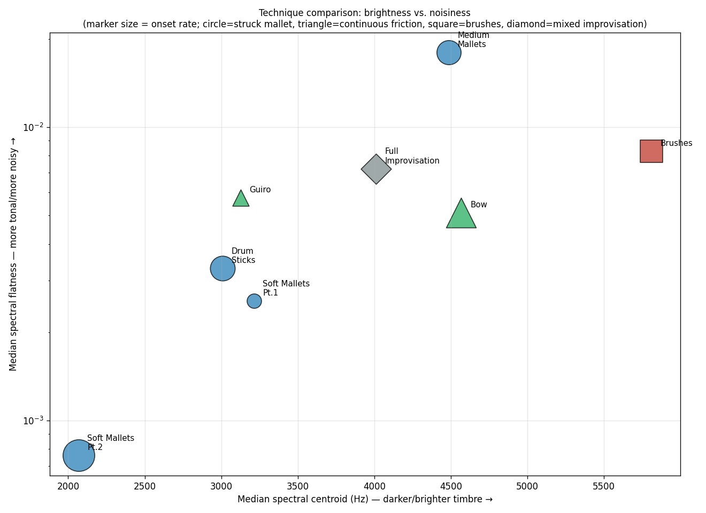
Every recording shows one of the six bands, and each band is the strongest lock-in in at least one recording: 110Hz emerges in Soft Mallets Pt.2, 185Hz emerges in Bow, 320Hz emerges in Drumsticks, 400Hz emerges in Medium Mallets, 585Hz emerges Guiro, and 820Hz emerges in Brushes. The frequencies aren't in a harmonic series (the ratios between neighbours run roughly 1.2–1.8), arguing for separate, independent resonant modes of the mixer's system itself, which show up whether the cymbal is bowed, brushed, struck, or scraped.
2. A typology of feedback behaviours
Across all the isolated-decay case studies documented below, the same handful of qualitatively distinct behaviours keep recurring:
| Behaviour | What it looks like | Clearest examples |
|---|---|---|
| Regenerative buildup | A quiet, sometimes barely-audible touch grows on its own into a loud, sustained resonance | Soft Mallets Pt.2 (t≈4.8s); Medium Mallets (t≈90s); Guiro (t≈72s) |
| Frequency-selective sustain | One narrow band holds almost flat for many seconds while bands around it decay normally | Medium Mallets (t≈117s); Soft Mallets Pt.1 (t≈187s); Bow (t≈30.5s) |
| Narrowband lock-in | A single band jumps up fast, holds a flat plateau, then releases abruptly | Brushes (t≈38s, 500Hz–1kHz plateau for 9s) |
| Synchronized dip-and-recovery (limit cycle) | Every band drops together, then rebuilds together, with no new input | Bow (t≈98.7s); Final Improvisation (t≈456s); Soft Mallets Pt.2 (t≈76.7s) |
| Spontaneous collapse | A stable hold ends in a sudden, steep crash with nothing triggering it | Medium Mallets (t≈140s) |
| Irregular pulsing / breathing | Repeated rise-and-fall cycles that never settle into either decay or a flat hold | Final Improvisation (t≈251s); Guiro (t≈28s); Bow (t≈217s) |
| Cumulative buildup across a whole take | Only with continuous excitation: overall energy climbs steadily across many minutes rather than resetting after each gesture | Guiro (≈8× RMS rise over 3 minutes); Bow (similar rise over ~200s) |
| Full-spectrum broadband sustain | Nearly every band holds flat simultaneously for an unusually long window | Guiro (t≈145s, 28.7s clean); Soft Mallets Pt.2 (t≈76.7s, 19s clean) |
| Clean natural decay (contrast case) | Ordinary, monotonic fade with no regeneration | Brushes (t≈189s); Soft Mallets Pt.1 (t≈305s); Drum Sticks (t≈166s); Bow (t≈270s) |
No recording shows only one of these; every entry has at least two or three. The two continuous-excitation recordings (guiro, bow) are the only ones to show the cumulative-buildup pattern: a struck gesture delivers one burst of energy and leaves the feedback to do whatever it does next, while continuous friction keeps re-supplying energy at a steady rate.
3. How technique and material shape the interaction
Discrete strikes vs. continuous excitation: This is a structural split in this session, as it directly affects the degree of interdependence of the instrument and the mixer's signals.
Mallet hardness tracks brightness and noisiness: Aligning with the physical intuition about hardness and the contact area of the exciters used in the session the median centroid comparations shows how Soft Mallets (2,067–3,213Hz) < Drum Sticks ≈ Guiro (3,008–3,126Hz) < Medium Mallets ≈ Bow (4,485–4,568Hz) < Brushes (5,810Hz).
Rolls read as tonal: A roll on an untreated cymbal is dense and broadband; a roll into this mixer instead shows very low spectral flatness alongside a high onset rate, meaning the mixer picks a pitch and holds it even while being re-triggered several times a second.
Bell vs. side location produces a detectable signature: Two independent results, a timbral split and a drifting locked frequency, agree on the same boundary.
4. Overall picture
The mixer's feedback path behaves as a nonlinear system with a small, fixed set of preferred resonant states (the six frequencies above) that are largely produced by the electronic system rather than the cymbal. What the acoustic input actually controls, through its wide spectrum, is which of those states gets excited, how strongly, and via which qualitative behaviour. A single quiet, barely audible touch is enough to trigger a full-spectrum buildup that outgrows the gesture that started it. A strong, sudden attack can just as easily produce a clean decay that never catches at all. The relationship between gesture and outcome becomes closer to a threshold system, where the acoustic input's job is to nudge the loop across, or fail to cross, the boundary into self-sustaining behaviour, and once across, the mixer's own dynamics largely determine what happens next.
01 — Brushes
Source: 01_sistematicgestureBrushes.wav · 3:52.77 · brushing, hitting, and rubbing the cymbal
497 onsets over 232.8s, unevenly distributed: near zero through long ringing stretches, spiking above 20s. Clustering the take's gesture segments recovers three acoustic classes, mapped to the three named techniques:
| Class | Signature | Candidate technique |
|---|---|---|
| Broadband noise | High centroid (~8,900Hz), highest flatness, quietest, few onsets | Brushing: continuous friction noise |
| Tonal / percussive | Lower centroid, low flatness, moderate–high RMS, sparse onsets | Hitting: a strike followed by a resonant, often self-sustaining ring |
| Dense rhythmic | Low centroid (~2,600Hz), very low flatness despite an 18–27/s onset rate | Rubbing and Rolling: a fast periodic excitation that influences the mixer as a quasi-tonal pulse train |
Pitch content: the acoustic brush/cymbal contact itself has no fixed pitch, but once inside the mixer a small set of frequencies recur far more than chance would predict. 823Hz (roughly G♯5) is the dominant lock, present continuously nearly the entire hitting/rubbing portion of the take. 400Hz, 325Hz, 135Hz, and 113Hz surface mainly towards the end of the recording as the loop's resonance steps downward toward silence. None of these sit in a simple harmonic relationship, they represent independent resonant modes of the mixer's own feedback system.
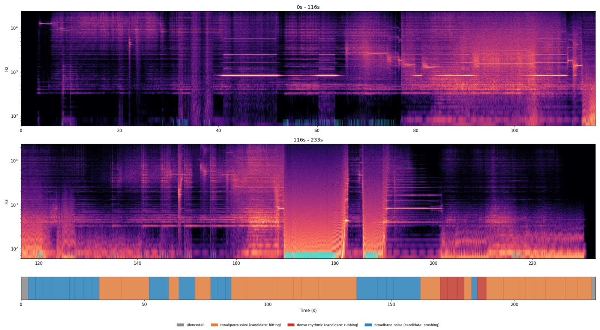
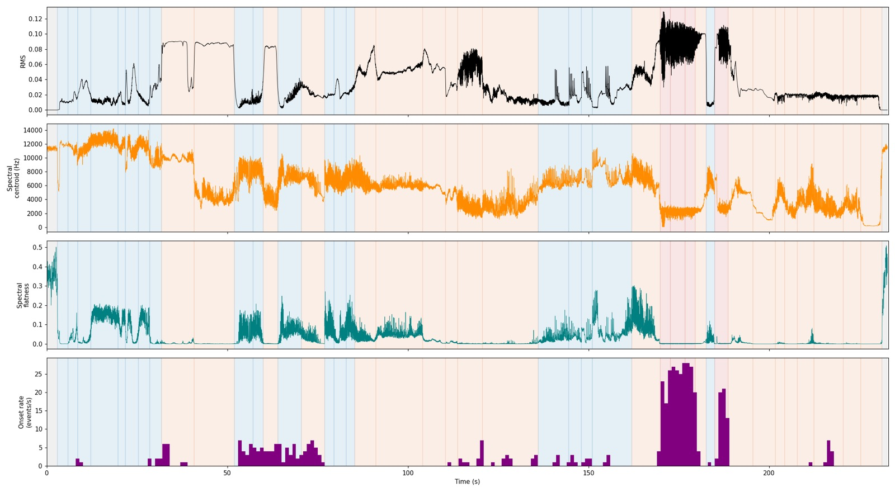
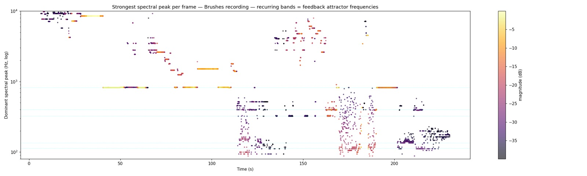
Interactions
Four isolated onsets, each followed by 15+ seconds with no further physical contact, sketch a small typology of what the loop does once excited by the instrument:
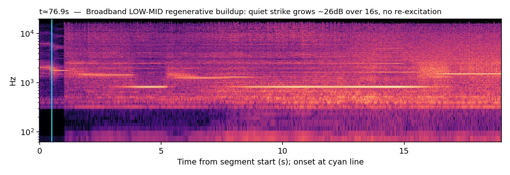
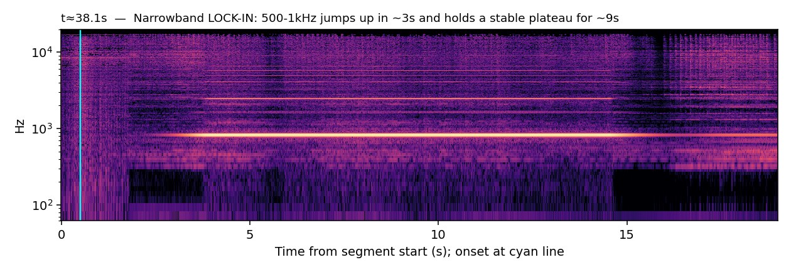
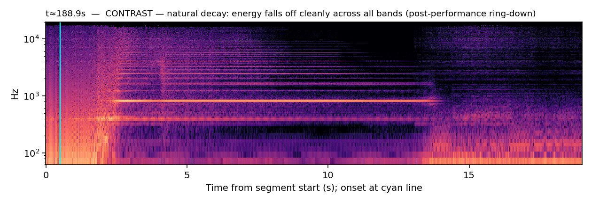
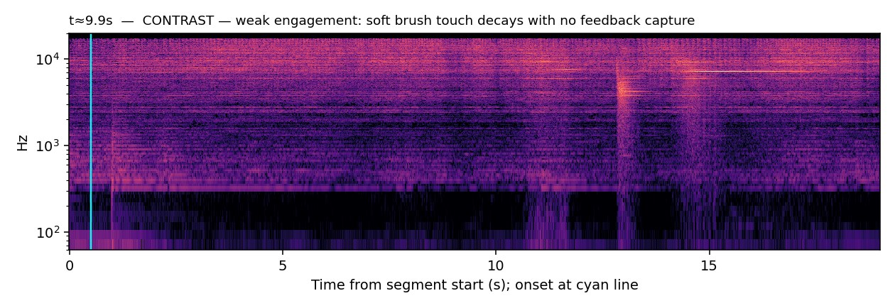
Broadband regenerative buildup
t ≈ 0:77The 200–1,000Hz range starts below the noise floor (−12 to −16dB) and climbs steadily to +14 to +20dB over the next 16 seconds: a 26–35dB rise with no new input.
Narrowband lock-in
t ≈ 0:38The 500Hz–1kHz band jumps from −14dB to +20dB in about 3 seconds and holds there for roughly 9 seconds, while every other band stays low: a clean capture of one resonant mode.
Contrast, natural decay
t ≈ 3:09Right after the rubbing burst, energy falls off cleanly and monotonically across all bands, high frequencies first: what this system does when it isn't captured into self-oscillation.
Contrast, weak engagement
t ≈ 0:10A soft touch during the opening brushing exploration decays away with only a brief, minor blip and never builds into anything sustained.
02 — Medium Mallets
Source: 01_sistematicGestureMediumMallets.wav · 2:33.15 · rolls, strokes, and hits (strokes and hits each tested on bell and side)
376 onsets over 153.2s (mean 2.46/s), essentially continuous apart from a lead-in and a tail. A roll passage (70.5–84.7s) stands out immediately: onset rate 12.7–23.6/s, yet flatness stays very low: a second confirmation that a fast, periodic gesture interaction with the the mixer render as quasi-tonal sound material rather than noisy. The remaining material splits into a sparser, more focused "strokes" class (4.2–41.0s) and a louder "hits" class (41.0–70.5s, 87.0–147.8s) that drifts in timbre (narrower/darker before ≈112–117s, brighter/broader after) and "cuts" the self-oscillation.
Pitch content: the dominant recurring frequency is 401Hz (roughly G4), locked continuously during the strokes phase, the first hits phase, and the rolls. 576Hz runs even longer, alongside 319Hz and 518Hz over similar stretches. In the window the dominant lock drifts upward through 576Hz, up to 900–1,100Hz, back to 650Hz, settling near 903Hz (roughly A#5) for the final ~10 seconds. Something physical changed in that stretch, correlating with timbral shift.
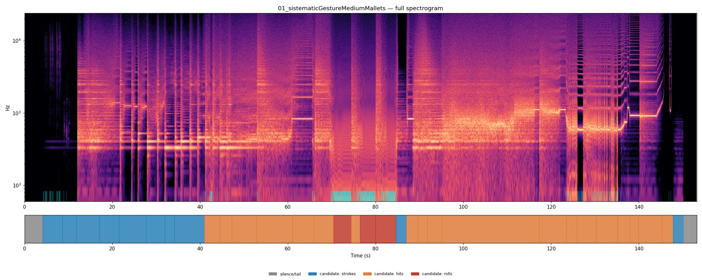
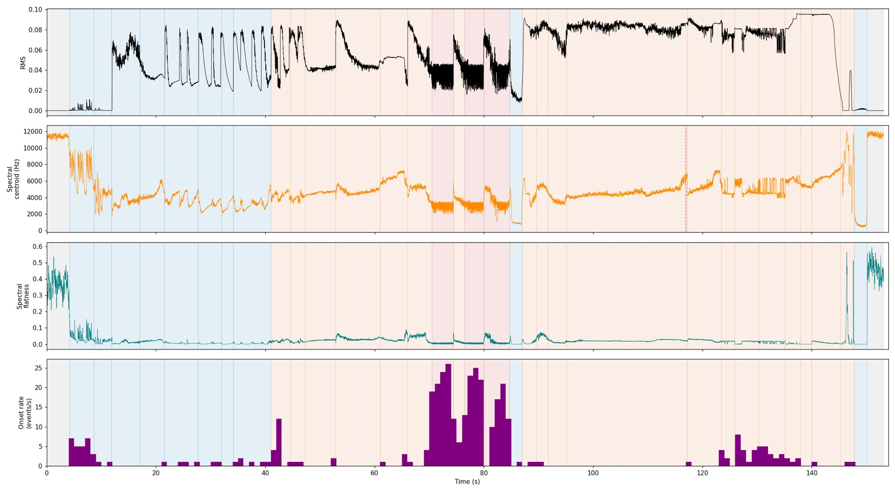
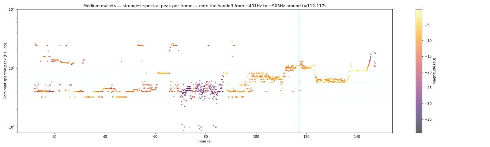
Interactions
Four onsets, each window cut exactly at the next detected onset so nothing shown is contaminated by a new strike:
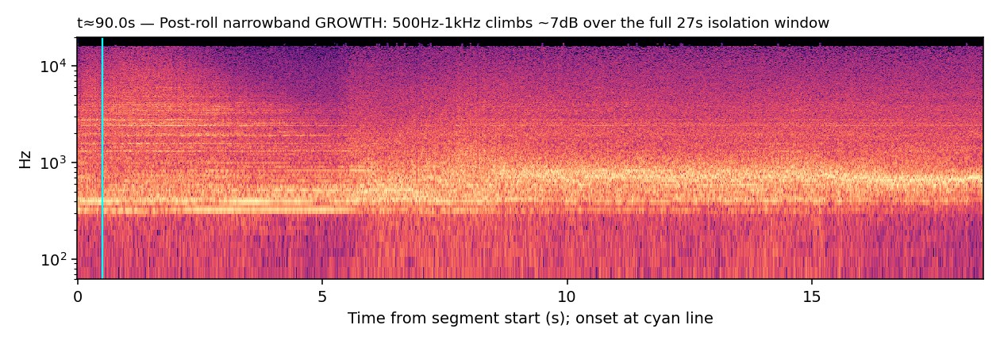
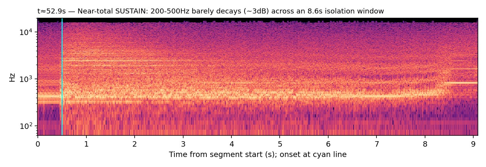
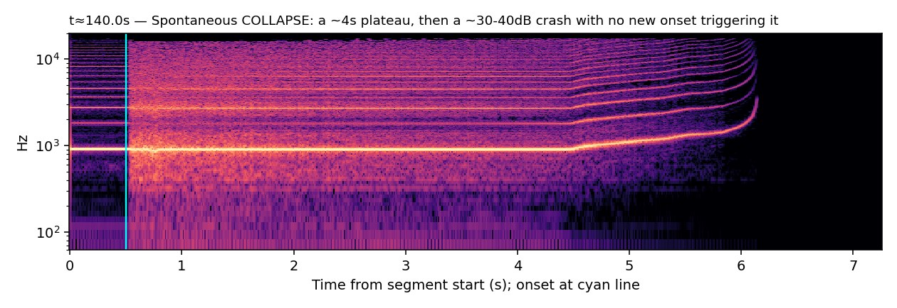
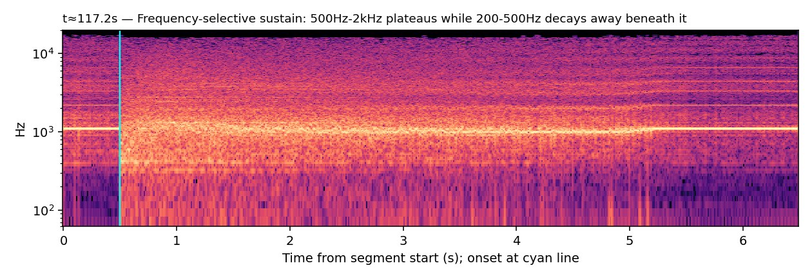
Narrowband growth
t ≈ 90.0sRight after the roll ends: the 500Hz–1kHz band climbs from ~22dB to ~28–30dB across 27.2s with nothing re-exciting it, while 200–500Hz gently falls.
Near-total sustain
t ≈ 52.9sThe 200–500Hz band moves only about 3dB across the whole window. This is the loop blending with the struck cymbal and actively resistis its decay.
Spontaneous collapse
t ≈ 140.0sA stable ~20dB hold in 500Hz–1kHz holds for about 4 seconds, then crashes 30–40dB in roughly 1.5 seconds — with the next physical onset still over a second away.
Frequency-selective sustain
t ≈ 117.2sRight inside the drift window above: 500Hz–2kHz holds close to flat for the whole window while 200–500Hz underneath it steadily decays away.
03 — Soft Mallets
Two recordings from the same soft-mallet session. Same gesture set as Medium Mallets (rolls, strokes, hits at bell and side)
Part 1 — 6:16.16
329 onsets, concentrated unevenly. Soft mallets produce a noticeably darker and more tonal than medium mallet type.
The take splits into four blocks: an opening, dense/bright block with one sharp roll insert (strokes → rolls), a long, sparse, dark block (hits on bell), and a very sparse, brighter final block (hits on side), similar to the behaviour observed in the Medium Mallets rec.
Pitch content: 319Hz (roughly D♯4) and 401Hz (roughly G4) are the two dominant locks, and both survive between blocks, present early on and reappearing after the loop has gone completely silent. Again an evidence that these are persistent resonant states of the mixer's circuit itself, potentially triggered. A third, quieter 109Hz (roughly A2) lock builds up in the later, darker part of the second block.
No spectrogram/feature-tracking images were generated for Part 1. The four gesture recordings below, are taken from the analysis if the full set.
Interactions — Part 1
Decay, then a late resurgence
t ≈ 45.6sThe 200–500Hz band fades steadily for 13 seconds toward −11dB, looking headed for silence, then climbs back on its own to +14dB by t=19s. A fade out and a comeback.
Frequency-selective sustain
t ≈ 186.7s500Hz–1kHz drops only about 7dB across the whole window (essentially holding) while 1–2kHz and 8–16kHz fall away much faster underneath it.
Contrast and genuine settling decay
t ≈ 304.6sThe last isolated onset before silence: every band collapses within about 2 seconds and mostly stays down.
Quick dip, then a louder swell
t ≈ 350.6s200–500Hz dips from +19dB to +12dB, then climbs past its own starting point to +26dB creating a compact "out and in again" cycle.
Part 2 — 3:56.17
997 onsets and markedly darker still: median centroid 2,067Hz, flatness close to zero almost everywhere. Structure splits into a sparse dark opening, a hits/strokes class, and three separate roll bursts. Combined with the roll instances already documented, the roll signature now counts six independent instances of the "fast-but-tonal" nature across four recordings.
Pitch content is the strongest lock in the session: 109Hz (roughly A2) dominates almost completely: the strongest peak in nearly half of all analysed frames, present continuously from 0s to 233s regardless of gesture. This is the same frequency that appeared only as a secondary lock late in Part 1, and now confirmed as the dominant resonance of an entirely separate take, again a sign of the mixer own self-sutained resonances.
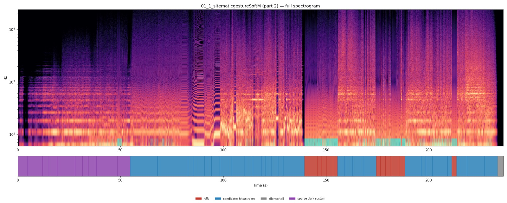
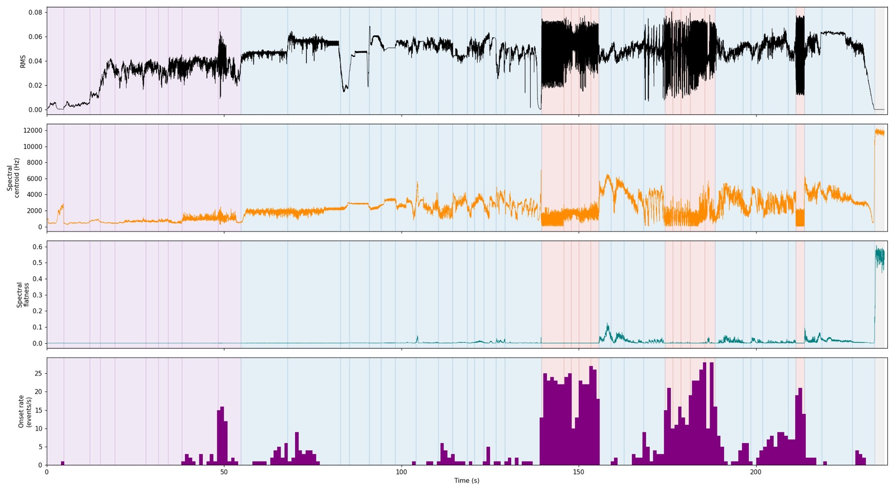
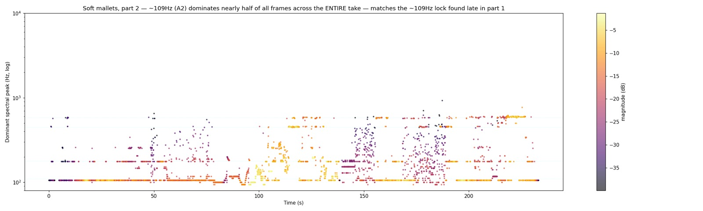
Interactions — Part 2
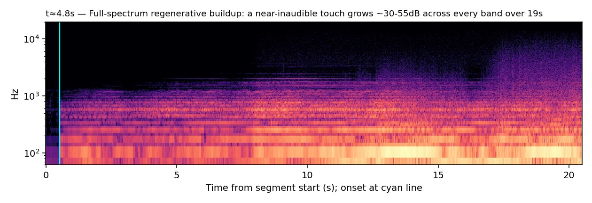
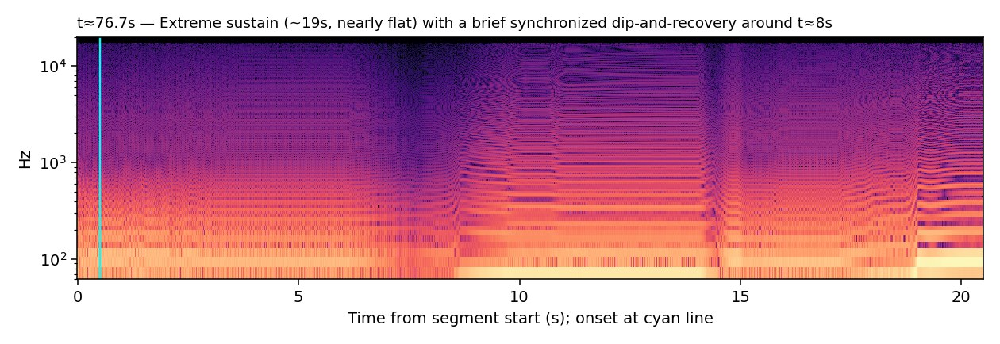
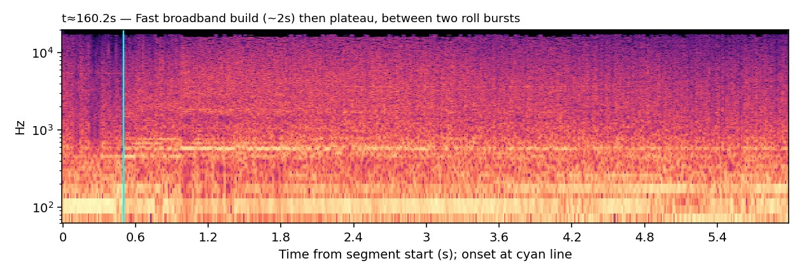
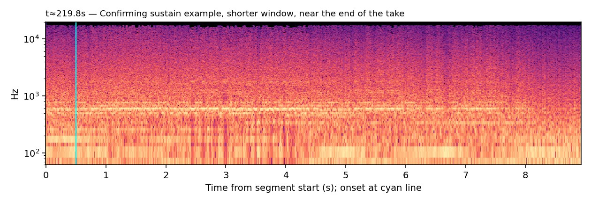
Full-spectrum regenerative buildup
t ≈ 4.8sEvery band grows with nothing re-exciting it.
Extreme sustain with a synchronized dip
t ≈ 76.7sAll bands hold within a couple of dB of their starting level for 19+ seconds, then dip sharply and recover together within few seconds.
Fast broadband build, then plateau
t ≈ 160.2sBetween two roll bursts: every band rises within about 2 seconds of a very quiet onset and holds there.
Confirming sustain
t ≈ 219.8sA shorter but consistent case of the same near-flat holding behaviour already documented above.
Cross-recording analysis: Part 2 is darker and more heavily locked than Part 1; possibly becasue of a more consistent soft, central mallet contact throughout. Both parts show the same qualitative repertoire though: regenerative buildup from a quiet touch, extended near-flat sustain, and synchronized whole-spectrum dip/recovery.
04 — Drum Sticks
Source: 01_sitematicgesturesSticks.wav · 3:36.78 · rolls, strokes, and hits (strokes and hits each tested on bell and side)
216.8s, continuous apart from a lead-in and short tail. 559 onsets (mean 2.58/s). Median centroid and flatness lay almost exactly between medium and soft mallets in the "brightness ranking". Clustering finds a clean five-part structure: strokes (bell+side interleaved), a hits region with low onset rate (side), a darker hits region (bell), a roll, and a resumed brighter hits region (side). The bell/side duality rests on the same brighter-and-broader vs. darker-and-narrower contrast found in Medium Mallets.
Pitch content confirms the system's "preferencies": 319–331Hz is the dominant lock here, present continuously from 14s to 213s, with 401Hz alongside it from 19–213s and a quieter 109–121Hz lock from 26–212s. These are the same two dominant locks found in both Medium Mallets and Soft Mallets Pt.1, and 109Hz is the same frequency that dominated Soft Mallets Pt.2. Three completely different excitation materials: soft, medium, and hard stick, and the mixer keeps returning to the same handful of resonant frequencies regardless.
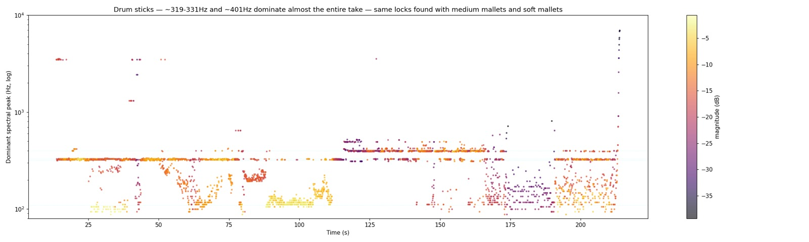
Interactions
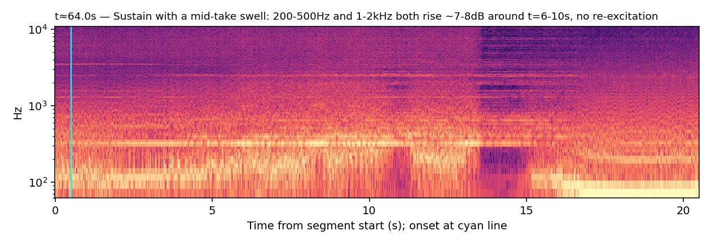
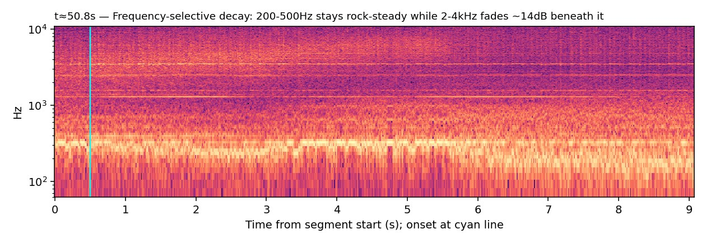
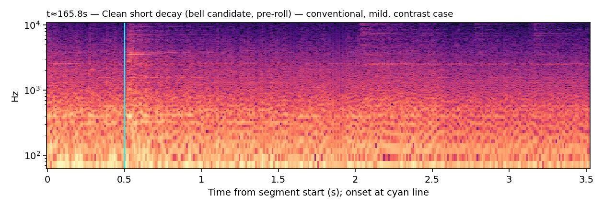
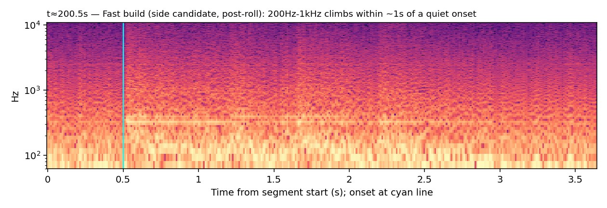
Sustain with a mid-take swell
t ≈ 64.0sThe longest isolation in this file (20.5s): 200–500Hz and 1–2kHz both hold, then climb further around t=6–10s with nothing re-exciting them, before easing back down.
Frequency-selective decay
t ≈ 50.8s200–500Hz stays within 2–3dB of flat for the whole window while 2–4kHz fades roughly 14dB beneath it.
Clean short decay
t ≈ 165.8sStroke on Bell, just before the rolls: a conventional, fairly ordinary decay across all bands.
Fast build
t ≈ 200.5sStroke on the side, right after the rolls: 200Hz–1kHz climbs sharply and holds, a compressed regenerative-buildup pattern.
05 — Guiro (Stick Rubbed on Cymbal Side)
Source: 01_1_sisteamticgesture_Guiro.wav · 3:02.10 · extended technique (continuous friction)
Median centroid and flatness are close to the Drum Sticks recording (the same stick material, used differently). The defining feature here isn't per-gesture decay but a cumulative buildup: mean RMS energy rises roughly eightfold, near-monotonically, across consecutive 30-second windows over the full three minutes. The discrete-strike recordings doens't behaves like this: continuous friction cumulatively feeds the loop, with later continuation of the gesture needing less effort to sustain a loud, dense texture than the earlier did.
Pitch content: 576–606Hz, 500Hz and 821Hz cover almost the entire take. 821Hz is the same lock (within a few Hz) that dominates both the Brushes and Medium Mallets recordings; 576Hz is likewise close to a lock seen in both. Again, rather than each technique creating its own unrelated set of resonances, the different excitation styles seem to preferentially wake up different subsets of a shared pool of resonant modes of the mixer itself.
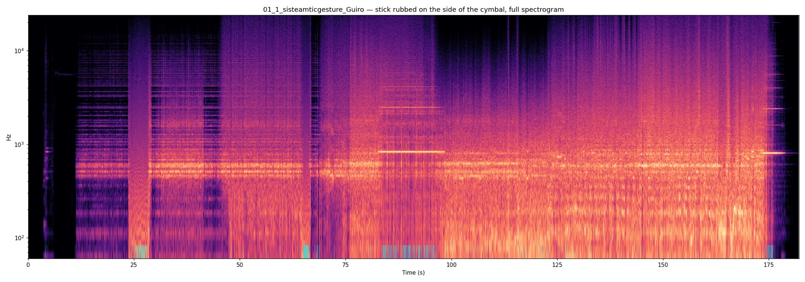
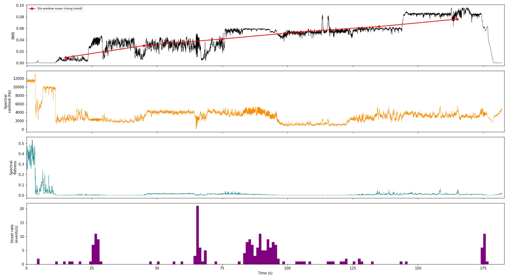
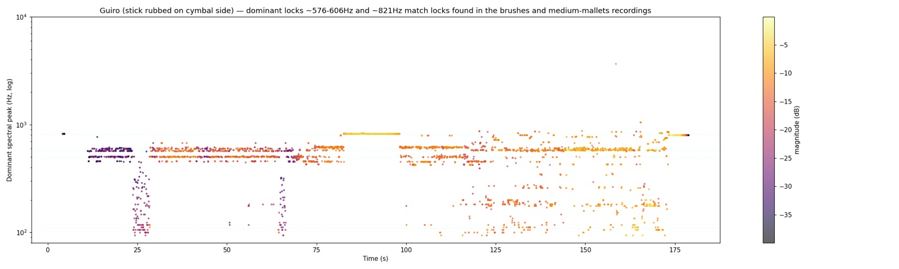
Interactions
Four gap-truncated isolated onsets, chosen from the moments where the continuous rubbing did pause:
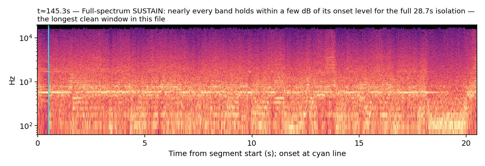
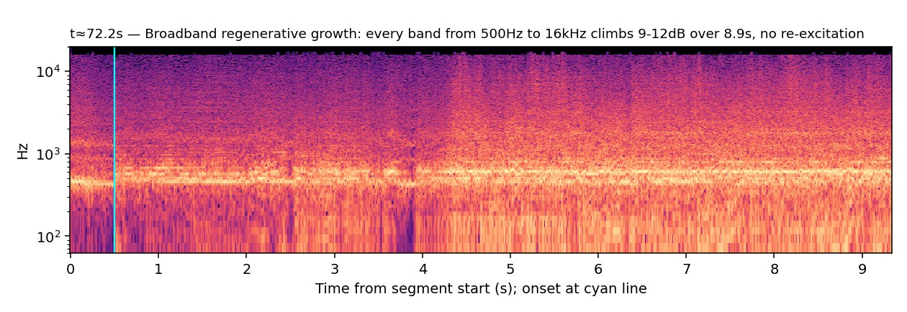
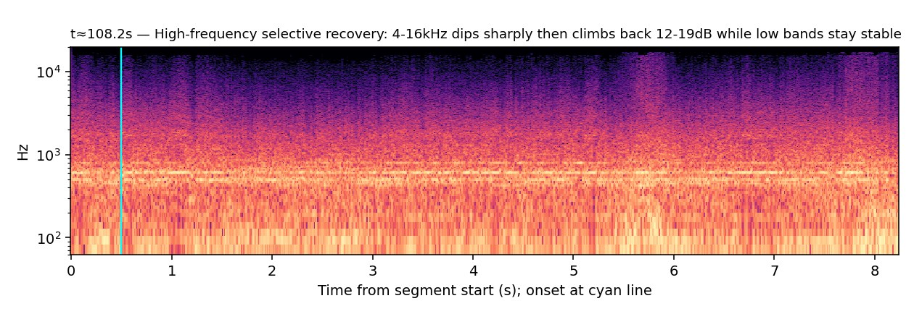
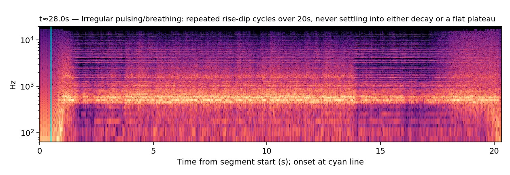
Full-spectrum sustain
t ≈ 145.3sA long windowe with right at its start the loudest stretch of the piece.
Broadband regenerative growth
t ≈ 72.2sA full-spectrum version of the narrowband buildup pattern seen in earlier entries: 9–12dB across the whole range.
High-frequency selective recovery
t ≈ 108.2sThe 4–16kHz range dips sharply, then climbs back 12–19dB, the inverse of the more common "low sustains, high fades" pattern seen elsewhere.
Irregular pulsing
t ≈ 28.0sA "breathing" / self-oscillation example.
06 — Bow (Double Bass Bow)
Source: 01_1_sistematicgestureBow.wav · 4:40.42 · extended technique — continuous excitation
Bowing produces a strongly tonal excitation. This take shows two phases: a long buildup across the first ~200s (energy generally climbing instead of resetting after each stroke), then a marked brightening around 200–260s where centroid jumps to a higher range, representation of a change in bow contact point and pressure.
Pitch content: 178–190Hz (roughly F3/F♯3) is present throughout the entire take. Short locks appear in sequence beneath it: 249Hz, 354Hz, 390Hz, and 600Hz. Continuous excitation seems to let the feedback settle into and hold a resonance more than a struck excitation does.
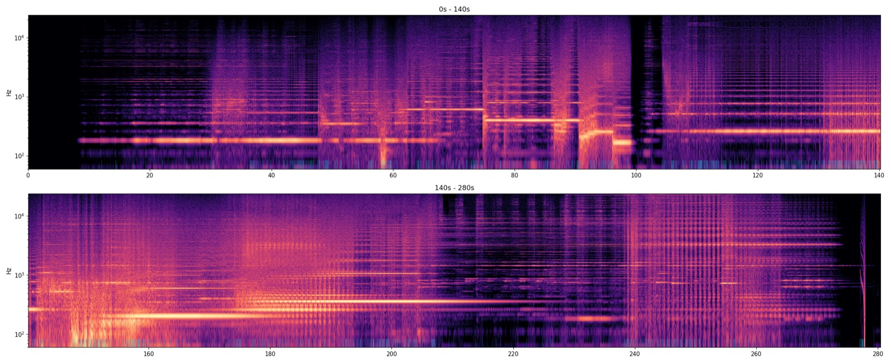
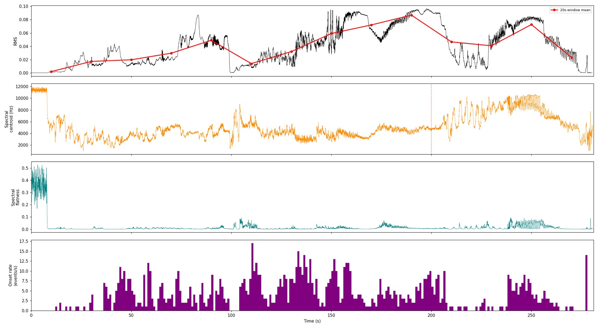
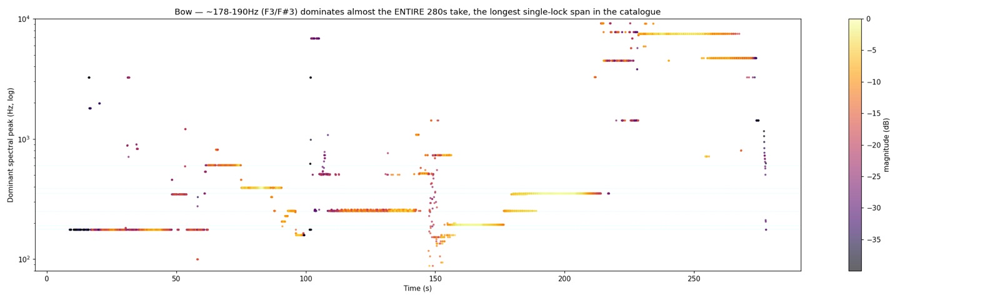
Interactions
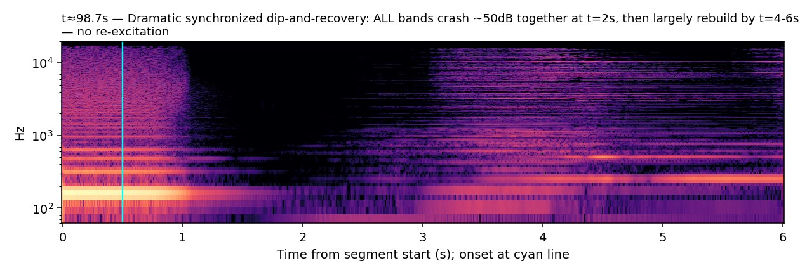
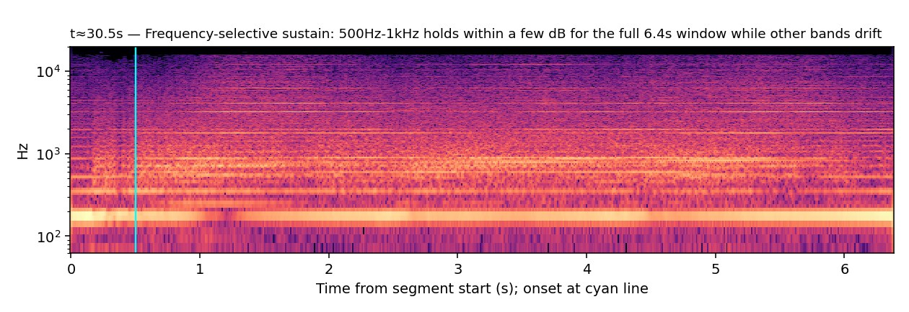
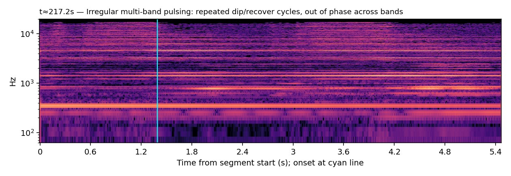
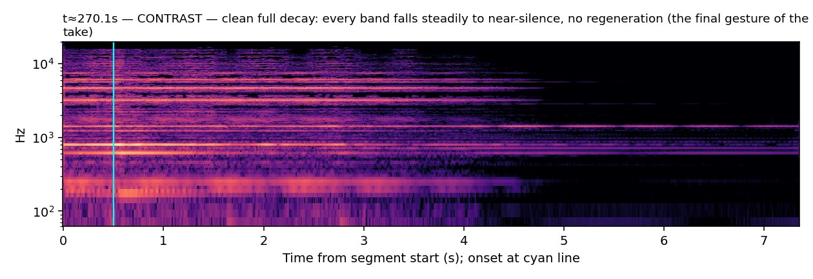
Synchronized dip-and-recovery
t ≈ 98.7sEvery band crashes together within about 1.5 seconds, bottoming out near-silent, then largely rebuilds within 4–6 seconds with nothing re-exciting it.
Frequency-selective sustain
t ≈ 30.5s500Hz–1kHz holds within a few dB of flat for the entire window while the bands around it drift more.
Irregular multi-band pulsing
t ≈ 217.2sA more chaotic version of the breathing pattern seen in the Guiro excerpts.
Contrast — clean, complete decay
t ≈ 270.1sEvery band falls steadily to near-silence.
00 — Final Improvisation as Synthesis
9:42 · 1,125 onsets · median centroid 4,011Hz · mixed: mallets, rolls, guiro effect, nail-scrape, bow
The full improvisation is what happens when all six are combined with the free-form negotiation between player and feedback loop that the systematic studies were designed to isolate from. This adds to the studies of the isolated gesture, an analysis of transitory parts: what happens when the feedback and the system, left in one state by one gesture, is immediately given a different kind of input by the next.
Interactions
Frequency switch
t ≈ 278sA spontaneous shift in which resonant regime the loop is holding onto mid-decay, without a new physical excitation.
Self-oscillating swell
t ≈ 251sThe same pattern documented in the Guiro and Bow entries' "irregular pulsing".
Limit-cycle dip & recovery
t ≈ 456sA synchronized whole-spectrum dip-and-recovery (similar behaviour documented in the Bow entry).
Regenerative buildup
t ≈ 440sA regenerative buildup from a near-silent strike, documented independently in four other recordings across this session.
Catalogue of Interactions · Session 02
Electric Guitar
The session explores how a harmonic electric instrument, inserted into the mixer as a line signal, can influence the feedback loops. Furthermore, different pre-mixer effects are used on the guitar signal, observing how each differently shapes the interaction with the NIM. It also explores non-conventional techniques operating on the sound-production method of the instrument itself, such as the use of a contact mic and a violin bow for friction, and a condenser mic to create feedback with the pickup.
I took advantage of the time booked to rehearse for an upcoming performance to also record for this session, so all six recordings here are full rehearsal takes rather than short, dedicated technique demonstrations. Instead of isolating each gesture in its own take as the other sessions in this catalogue do, every technique documented below has been pulled out after the fact, at the specific timestamps where it actually occurs across these six improvisations. Six techniques are documented: chords (plucked, strummed, and arpeggiated), harmonics, tapping pick, brushing with a contact mic, bowing, and the guitar's own pre-mixer processing (delay and pitch-shifting).
Jump to
Setup
Amplification & No-Input Mixer Configuration
The guitar is captured with the signal passed through a Helix multi-fx processor before reaching the mixer, so the "instrument" feeding the loop is the guitar plus its own pre-processing chain. Additionally, a contact mic and a condenser mic (Rode NT5) have been used for some of the more experimental techniques.
Mackie 1202-VLZ PRO
| Output | Input |
|---|---|
| Main L | Channel 7/8 L |
| Main R | Channel 7/8 R |
| Channel 1 (from channel insert tip-send) | Channel 1 |
| Channel 2 (from channel insert tip-send) | Channel 2 |
| Channel 4 (from channel insert tip-send) | Channel 5/6 L |
| Guitar (first passing through multi-fx processor) | Channel 3 (Line) |
| Contact mic | Channel 4 |
| Condenser mic (when used) | Channel 4 (instead of Contact mic) |
| Control room L | Channel 9/10 (mono signal in L) |
| Aux 1-2 | Channel 11/12 |
| Tape out (used as output) (RCA to jack) |
Gain & EQ
| Channel | Gain (initial) | EQ |
|---|---|---|
| Ch 1 | +15dB (Line) | HPF + focus on High bands |
| Ch 2 | +30dB (Line) | focus on Low bands |
| Ch 3 | 0dB (Line) | Variable, depending on the evolution of the feedback |
| Ch 4 | +10dB (XLR) | Variable, depending on the evolution of the feedback |
| Ch 5/6 | Stereo channel (Line) | Equal low and high |
| Ch 7/8 | Stereo channel (Line) | focus on extremely High bands |
| Ch 9/10 | Stereo channel (Line) | focus on extremely High bands |
| Ch 11/12 | Stereo channel (Line) | Variable, depending on the evolution of the feedback |
Gain range depends on input type: 0dB to +60dB using XLR, using Line there is a 15dB attenuation up to 45dB at the knob fully up; the stereo channel runs from off +10dBV to +4dBU (no knobs).
Instrument techniques
| Technique | Category | Description | Sonic result |
|---|---|---|---|
| Chords — plucked with fingers | Conventional | Open chords plucked softly, attack shaped with the instrument's volume knob. | A smooth swell with the low and low-mid bands that hold a steady resonance. |
| Chords — strummed with the pick | Conventional | Full chords strummed with a pick. | Each strum re-triggers a sharp attack transient. |
| Chords — arpeggiated | Conventional | Notes of a chord picked out in sequence rather than together. | Every note decays cleanly. |
| Harmonics | Extended | Natural harmonic touched off the string. | Narrow, clean pitched peaks. |
| Tapping pick | Extended | The pick tapped against the string or sliding into a glissando. | Rapid, bright and percussive noisy texture. |
| Brushing with contact mic | Extended | Contact mic brushed directly against the strings/body. | Continuous friction noise. |
| Bowing | Extended | The string excited with a violin bow. | Continuous excitation of the string's spectra. |
Processing before the mixer
Alongside the physical techniques above, the performer also made use of two pre-mixer effects:
| Processing | Sonic result |
|---|---|
| Delay | Regularly-spaced echo repeats show up as a comb of vertical bands across the whole spectrum. |
| Pitch shifting | A slower, roughly cyclic frequency shift. |
Control techniques
| Gesture | Sonic effect |
|---|---|
| Mixing signals into the Aux channel | Three effect types depending on feedback state and what's mixed in: an abrupt cut of the feedback, a gradual blend between acoustic and electronic sound, or a morph of the feedback taking on characteristics of the acoustic sound mixed with it. |
| Gain changes | On the pure feedback channel, changes its nature (sustained tone, pulsar, etc.); on the instrument's channel, changes how strongly the acoustic sound interacts with the feedback: high values mean more interaction, low values less. |
| EQ adjustment | Morphs the feedback's nature the same way gain does, while also filtering the different spectral regions of the acoustic instrument. |
Analysis method
Each technique instance below is a short excerpt (6–20 seconds) cut from one of the six raw improvisations. Every excerpt is processed the same way: a frequency spectrogram (2048-sample STFT, 512-sample hop, 32kHz sample rate) and a 4-band energy trend (80–200Hz, 200–500Hz, 1–2kHz, 4–8kHz), to characterise whether the mixer's feedback loop builds, decays, or holds steady during and immediately after the gesture.
The recordings are natively 48kHz, but analysis is at 32kHz (16kHz audible bandwidth) rather than run at full native rate: above roughly 18kHz the recordings carry a persistent, near-flat noise band that doesn't move with the playing and shows up identically in quiet passages regardless of technique. Almost certainly interference from the recording chain itself or my audio interface. Left in, it dominates the brightness statistics for any quiet excerpt therefore I opted for a 16kHz ceiling.
General Overview & Synthesis
The electric guitar and the no-input mixer
The six raw recordings total 1h 47m of continuous free improvisation; fifteen short excerpts have been pulled from them for this document, spanning six techniques.
| # | Recording | Duration | Onsets |
|---|---|---|---|
| 01 | First Improvisation | 22:32 | 2,657 |
| 02 | Second Improvisation | 13:14 | 1,584 |
| 03 | Third Improvisation | 15:52 | 2,020 |
| 04 | Fourth Improvisation | 23:11 | 2,893 |
| 05 | Fifth Improvisation | 10:55 | 1,342 |
| 06 | Sixth Improvisation | 13:28 | 1,611 |
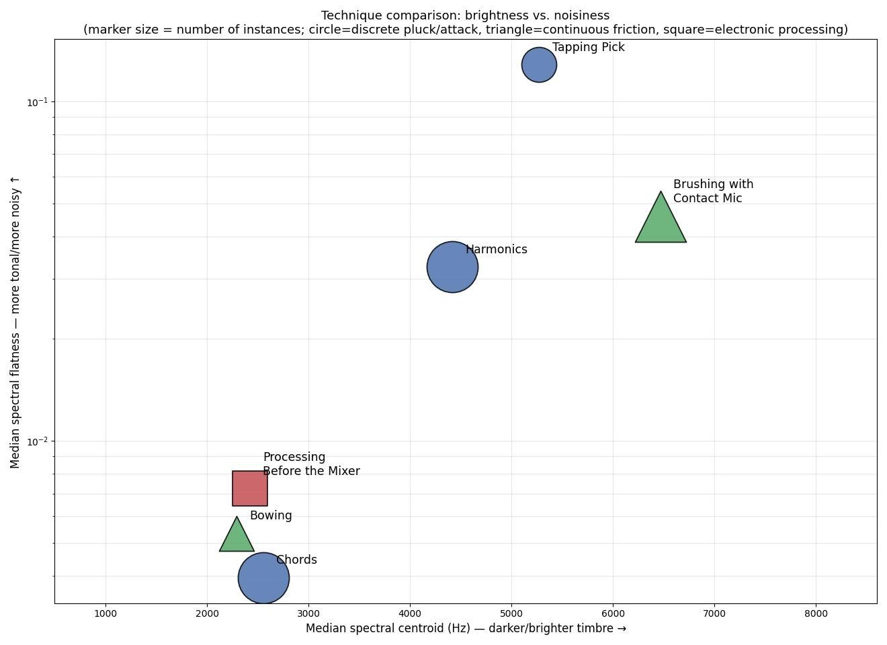
1. The instrument fingerprint
In this session, the structural split is again (see Cymbal) between techniques that supply energy continuously and those that deliver it in discrete pulses. Bowing and brushing with a contact mic, two of the most continuous ones, produce three of the session's four clearest full-spectrum-buildup or slow-climb cases. The discrete techniques (chords, harmonics, and tapping) show a much more mixed picture: some instances build (plucked and strummed chords), others decay (arpeggiated chords) or settle into a narrowband sustain (harmonics) instead.
2. A typology of feedback behaviours
Across the fifteen marked instances, the same handful of qualitatively distinct behaviours recur, echoing the typology found in the cymbal session:
| Behaviour | What it looks like | Clearest examples |
|---|---|---|
| Full-spectrum regenerative buildup | Every band gains energy together across the window, with no sign of decay | Bowing II (+2.6 to +9.9dB across all four bands); Delay + pitch shifting (+2.1 to +6.3dB) |
| Frequency-selective sustain | One mid-register band holds or even gains while the bands around it collapse | Harmonics III (200–500Hz −0.7dB vs. 80–200Hz −12.1dB); Harmonics II |
| Clean decay / no locking | Every band fades together, on the instrument's own terms | Chords arpeggiated; Brushing II (steepest drop in the session, −15.4dB) |
| Cyclic wavering | Energy rises and falls repeatedly without settling into either buildup or decay | Tapping pick (glissando); Pitch shifting alone |
| Partial capture | The low end holds steady while the high end decays with each new attack | Chords strummed with the pick |
3. How techniques and material shape the interaction
Attack style decides the outcome: chords played three ways on the same strings span nearly the whole brightness range of the session. Plucked with attack softened by the volume knob, swells into a frequency lock; Strummed with a pick generates stromng burst of energy follwed by continuous distortion and frequency locks; Arpeggiated reaches the brighter and thinner frequency bands.
Pitched content decides what the loop locks onto: unlike the cymbal, whose mixer returns to the same six resonant frequencies no matter what struck it, the guitar's harmonics show the loop locking onto whatever pitch is actually played.
Some continuous techniques transfer better than others: a bow, produces the same clean full-spectrum buildup found in the cymbal's own continuous techniques. A contact mic brushed across the strings is far less predictable.
The string's own decay competes with how fast it's re-excited: a plucked string starts decaying the moment contact ends, so whether the loop settles depends on whether the next attack outruns that decay. A single harmonic touch lets the string's own slow decay carry the mixer into a steady hold, while the tapping pick re-excites it so fast that it never gets the chance to do so.
4. Overall picture
The guitar's harmonic nature changes what the mixer answers to. Where the cymbal's loop falls back on a small, fixed set of resonances regardless of technique, here it tracks the actual pitch and rhythm of whatever excites the string, whether that's a finger, a pick, a bow, or a contact mic. Attack style and re-excitation speed decide whether the loop settles, builds, or locks onto a note. As with the cymbal, this behaves like a threshold system, except here the threshold responds to how a note was set moving rather than to a fixed property of the mixer itself.
01 — Chords
Sources: S02_fourthImprov.wav, S02_firstImprov.wav, S02_secondImprov.wav · plucked, strummed, and arpeggiated chords
The three ways of setting a chord moving produce three different outcomes from the mixer. Plucked with fingers, with the attack softened by the instrument's volume knob: swells smoothly rather than striking, the low and low-mid bands climb for about three seconds and then hold almost flat for the rest of the excerpt, while the top end fades quietly underneath. Strummed with the pick behaves differently: five or six strums are each visible as a sharp broadband transient that decays away in the top band within a couple of seconds, but the 80–200Hz band barely moves across the whole excerpt, holding a near-constant level from strum to strum regardless of what happens above it (mixer locking in). Arpeggiated gives the cleanest decay of the three: the passage excited the high end of the feedback loop, resulting in a grainy high texture, and a 6,812Hz median centroid.
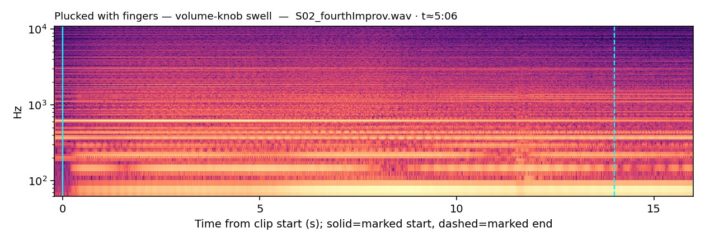
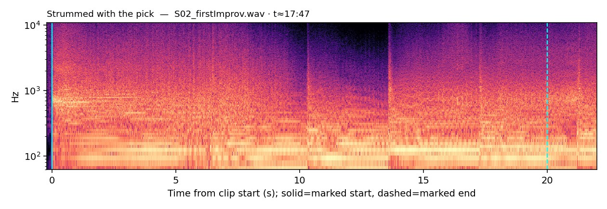
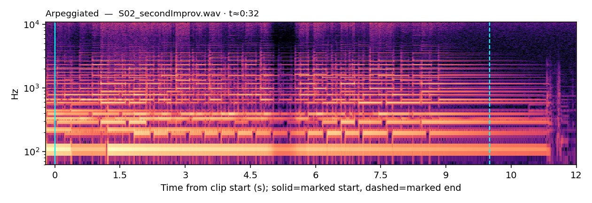
Interactions with the NIM
Plucked with fingers — volume-knob swell
S02_fourthImprov.wav · t≈5:06The mixer gradually locks in.
Strummed with the pick
S02_firstImprov.wav · t≈17:47Five or six strums each produce a sharp broadband spike that decays away in the top band within a couple of seconds.
Arpeggiated
S02_secondImprov.wav · t≈0:32Each picked note fades on its own terms while the higher bright frequency area locks into the arpeggio's rhythm.
02 — Harmonics
Sources: S02_fifthImprov.wav, S02_thirdImprov.wav, S02_fourthImprov.wav · natural harmonics touched off the string
All three harmonics' excerpts share a visible, narrow pitched character, but they diverge in what happens to that pitch over time. The first is a single harmonic around 592Hz with only a very gradual decay across every band. The second shows a run of stepped harmonic touches before settling onto one sustained tone near 330Hz while the low end loses energy. The third pushes that same pattern furthest: the bass drops a full 12.1dB across the window while the 200–500Hz band directly above it barely moves (−0.7dB).
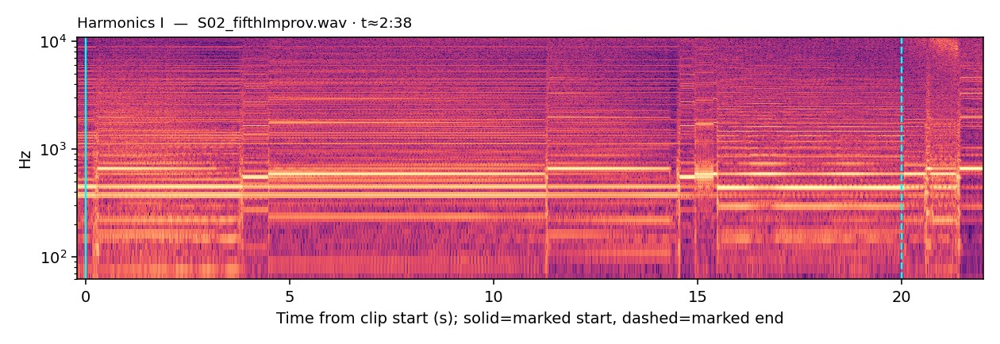
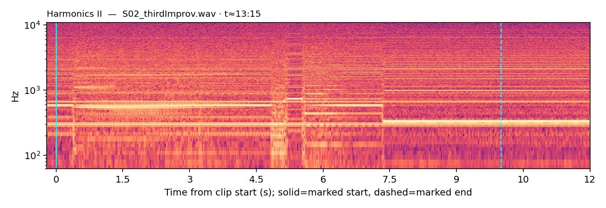
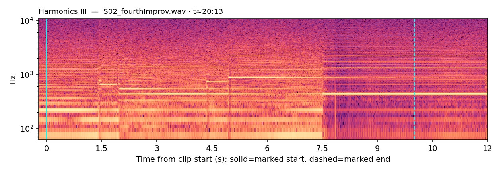
Interactions with the NIM
Harmonics I
S02_fifthImprov.wav · t≈2:38One harmonic pitch around 592Hz sustains for the full 20 seconds with only a very gradual overall decay; every band stays within 2.6dB of where it started, with the mixer barely distorting the signal.
Harmonics II
S02_thirdImprov.wav · t≈13:15The first seven seconds show a ladder of discrete pitch steps as different harmonics are touched in sequence; the passage then locks onto a single ~330Hz while the bass underneath collapses by 6.7dB.
Harmonics III
S02_fourthImprov.wav · t≈20:13The bass drops a full 12.1dB across the ten-second window. In this case, the feedback locks onto the harmonics, keeping one register alive while letting the rest go.
03 — Tapping Pick
Sources: S02_secondImprov.wav, S02_fourthImprov.wav · the pick tapped against the string, one instance a glissando
The glissando excerpt opens with a clean descending pitch line, sliding from around 4kHz down to 1kHz over the first four to five seconds, before breaking into a dense, irregular pattern that doesn't evolve into a steady state: every band stays within a few decibels of its starting level for the rest of the excerpt (the largest drift is only −2.6dB), the tapping re-excites the system too fast for it to either decay away or build up. The second excerpt is much shorter and punchier, in which the feedback visibly begins to capture the low register.
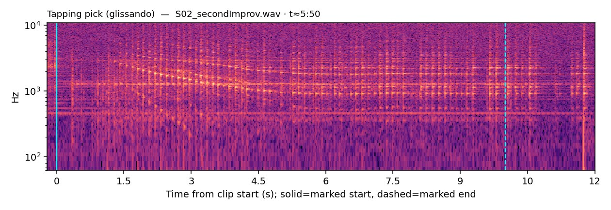
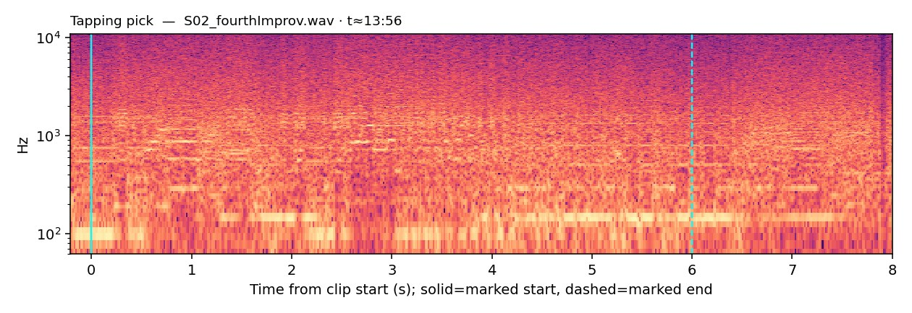
Interactions with the NIM
Tapping pick (glissando)
S02_secondImprov.wav · t≈5:50The pick slides, then the tapping turns rapid and irregular; every band stays within a few dB of its starting level.
Tapping pick
S02_fourthImprov.wav · t≈13:56A short, punchy six seconds in which the low end gains over 5dB.
04 — Brushing with Contact Mic
Sources: S02_firstImprov.wav, S02_secondImprov.wav, S02_fifthImprov.wav · contact mic brushed against the strings/body
The three brushing excerpts show what continuous friction can do to the loop. The first is a continuous gain: every one of the four bands gains a little energy across the full 20.5 seconds (+1.5 to +3.0dB), building a lock. The second is close to the opposite: a thin, scratchy burst with pitch trails runs for about 4.5 seconds before crashing 6–15dB across every band into near-silence. The third is a striking diagonal sweep climbing from around 130Hz past 8kHz through the middle of the window cuts the broadband hiss before the texture returns to noise.
Interactions with the NIM
Brushing with contact mic I
S02_firstImprov.wav · t≈8:24Every one of the four bands gains a little energy across the full 20.5 seconds (+1.5 to +3.0dB).
Brushing with contact mic II
S02_secondImprov.wav · t≈6:35A thin, scratchy burst with pitch trails runs.
Brushing with contact mic III
S02_fifthImprov.wav · t≈3:40Diagonal sweep climbing from around 130Hz past 8kHz through the middle of the window.
05 — Bowing
Sources: S02_thirdImprov.wav, S02_fourthImprov.wav · the string excited with a violin bow
Both bowing excerpts show continuous excitation feeding the feedback, but to different degrees. The first, with quick bowing, builds a dense harmonic ladder of stacked partials across the recording; the low end gains 3.6dB while the upper-mid gently recedes. The second, with slow bowing, is a full-spectrum buildup: all four bands gain energy simultaneously.
Interactions with the NIM
Bowing I
S02_thirdImprov.wav · t≈7:50Quick bowing stacks a dense ladder of partials that builds steadily across the full 18 seconds.
Bowing II
S02_fourthImprov.wav · t≈4:27All four bands gain energy simultaneously across the window. Continuous bowed excitation feeding the loop faster than it can decay triggers a regenerative buildup.
06 — Processing Before the Mixer
Source: S02_firstImprov.wav (both excerpts) · guitar-side delay and pitch-shift pedals engaged ahead of the no-input mixer
These two excerpts document the guitar's own pre-mixer effects chain at work. With delay and pitch shifting engaged together, regularly spaced echo repeats show up as a comb of vertical bands across the whole spectrum. With pitch shifting alone, roughly five-second waves of rising and falling energy replace the discrete echo repeats, and none of the four bands shows a net gain or loss by the end (largest drift −1.7dB).
Interactions with the NIM
Delay + pitch shifting
S02_firstImprov.wav · t≈9:27Regularly spaced repeats show up as a comb of vertical bands across the whole spectrum.
Pitch shifting
S02_firstImprov.wav · t≈18:28Roughly five-second waves of rising and falling energy.
00 — Final Improvisation as Synthesis
Source: S02_fourthImprov.wav (23:11) · four fresh case studies from the session's longest take
This take confirms what the technique-by-technique studies above suggest separately: the system behaves again like a threshold system that answers to the shape and rhythm of re-excitation. Across these selected moments, the loop moves through nearly every regime documented throughout the session: a quiet reordering of which band leads, a multi-cycle breathing pattern that never resolves, a restless texture settling into a held tone, and a full collapse into silence at the very end. Moreover this take shows how if left alone for long enough, the loop's own accumulated state strongly influences which side of that threshold it lands on next, adapting the morph in relation with the next excitation given by instrument.
Interactions with the NIM
Final Improv I
S02_fourthImprov.wav · t≈18:0380 to 200Hz drops 12.5dB while the two bands above it hold or gain slightly; by the end of the window the band that led at the start is the quietest of the four.
Final Improv II
S02_fourthImprov.wav · t≈19:24Every band rises and falls together three times across 26 seconds, never settling into either a hold or a decay.
Final Improv III
S02_fourthImprov.wav · t≈19:58The upper three bands gain 12 to 15dB out of the same jumpy texture documented in the previous excerpt, then hold at the new, brighter level for the rest of the window.
Final Improv IV
S02_fourthImprov.wav · t≈22:48Every band collapses in stages down to near silence, the bass dropping a full 69dB, the steepest collapse documented anywhere in this session.
Catalogue of Interactions · Session 03
Flute
The session explores how a wind instrument inserted into the mixer can influence the feedback loops through sustained tones and percussive gestures. It also explores non-conventional techniques operating on the sound-production method such as the use of a contact mic on a specific part of the disassembled instrument.
Jump to
Setup
Amplification & No-Input Mixer Configuration
The flute is captured two ways at once: a contact mic on the instrument body and a DPA mic.
Mackie 1202-VLZ PRO
| Output | Input |
|---|---|
| Main L/R | Channel 9/10 |
| Channel 1 (from channel insert tip-send) | Channel 1 (Line) |
| Channel 2 (from channel insert tip-send) | Channel 2 (Line) |
| Channel 3 | DPA mic |
| Channel 4 | Contact mic |
| Aux 1 | Channel 5/6 L |
| Aux 2 | Channel 5/6 R |
| Tape out (used as output) (RCA to jack) |
Channels 1 and 2 are self-patched through their own insert tip-send back into their own return, creating a feedback loop built directly into the Mackie's own patch bay.
Gain & EQ
| Channel | Gain (initial) | EQ |
|---|---|---|
| Ch 1 | +15dB (Line) | focus on the Mid-High band |
| Ch 2 | +25dB (Line) | focus on the Mid-Low band |
| Ch 3 | +19dB (XLR) | Variable, depending on the evolution of the feedback |
| Ch 4 | +25dB (XLR) | on the extremes of the EQ, depending on the evolution of the feedback |
| Ch 5/6 | Stereo channel (Line) | Variable, depending on the evolution of the feedback |
| Ch 9/10 | Stereo channel (Line) | focus on the Low band |
Gain range depends on input type: 0dB to +60dB using XLR, using Line there is a 15dB attenuation up to 45dB at the knob fully up; the stereo channel runs from off +10dBV to +4dBU (no knobs).
Control techniques
| Gesture | Sonic effect |
|---|---|
| Mixing signals into the Aux channel | Three effect types depending on feedback state and what's mixed in: an abrupt cut of the feedback, a gradual blend between acoustic and electronic sound, or a morph of the feedback taking on characteristics of the acoustic sound mixed with it. |
| Gain changes | On the pure feedback channel, changes its nature (sustained tone, pulsar, etc.); on the instrument's channel, changes how strongly the acoustic sound interacts with the feedback: high values mean more interaction, low values less. |
| EQ adjustment | Morphs the feedback's nature the same way gain does, while also filtering the different spectral regions of the acoustic instrument. |
Instrument techniques
| Technique | Category | Description | Sonic result |
|---|---|---|---|
| Constant tone | Conventional | Sustained tone with varied dynamics and attack modes. | Stable pitch with rich harmonic content. |
| Vibrato | Conventional | Constant tone with periodic pitch/amplitude modulation at different speeds. | Widens the range around the same reference pitch. |
| Pizzicato | Conventional | Percussive, tongued attack — the flute "plucked" rather than blown. | A clean, low, pitched pop with short attack. |
| Pitch bend | Extended | Bending pitch via embouchure while sustaining breath. | A controlled glide between reference pitches. |
| Air sound | Extended | Breath/turbulence noise with no stable embouchure pitch. | Bright, noisy material. |
| Roar | Extended | Embouchure fully covered, tongue rolled, producing a deep growl. | Almost pure tone rather than noise, with slow attack and release. |
| Key clicks | Extended | Purely mechanical finger/key contact against the flute body (no breath involved). | A clean, percussive resonance across a wide register. |
| Singing + playing | Extended | Singing and playing the flute simultaneously. | Two independent, non-harmonically-related pitches, usually with slow attacks and releases. |
| Whistle tones | Extended | Soft, delicate embouchure favouring high overtones over the fundamental. | Unstable excitement of the overtone series. |
Analysis method
Every recording below was processed the same way: onset detection (spectral-flux with backtracking), spectral-feature extraction (centroid, bandwidth, flatness, RMS) on a 2048-sample STFT, segmentation with clustering into acoustic classes, spectral-peak tracking to find recurring "attractor" frequencies, and isolated-onset case studies to see how different acoustic sound morphologies interact with the feedback loop.
General Overview & Synthesis
The flute and the no-input mixer
The session was structured in two stages: first, systematic, gesture-by-gesture studies that isolated one technique at a time; then, an improvisation that combined everything into a single continuous short performance. Total: 36.0 minutes, 8,267 detected onsets, seven recordings, nine techniques.
| Recording | Duration | Onsets | Rate |
|---|---|---|---|
| Constant Tone / Vibrato / Bend / Air | 6:41 | 1,223 | 3.05/s |
| Pizzicato | 2:44 | 820 | 5.01/s |
| Roar | 1:46 | 507 | 4.78/s |
| Key Clicks | 4:46 | 1,797 | 6.27/s |
| Singing + Playing | 2:59 | 392 | 2.19/s |
| Whistle Tones | 3:00 | 660 | 3.66/s |
| Final Improvisation | 14:06 | 2,868 | 3.39/s |
1. Different context, different outcome
All breath-and-embouchure techniques (constant tone, air sound, and roar recordings) show tracking into different frequency bands. Yet, in the single gesture session, this locking doesn't excite self-sustained regenerative buildup of the mixer: the feedback release dies at roughly the rate the air is withdrawn. Differently, the short, discrete, breath-free (or nearly so) gestures like pizzicato and key clicks show the opposite: examples of single brief attack triggering multi-second regenerative buildup, frequency-selective sustain, or sudden spontaneous collapse. In the longer, different session of the full improvisation, though, the picture is different: the constant-tone-like region shows a full regenerative buildup. The same technique that showed no such behaviour at all in its own dedicated recording shows a late, spontaneous high-frequency surge with nothing acoustically triggering it. Same technique, different context, different outcome.
2. A typology of feedback behaviours
Across both the isolated-decay case studies and the close onset-level pass documented below, the same handful of qualitatively distinct behaviours keep recurring:
| Behaviour | What it looks like | Clearest examples |
|---|---|---|
| Regenerative buildup | A quiet or brief touch grows on its own into a sustained resonance | Pizzicato (t≈91.6s, t≈114.7s); key clicks (throughout); constant tone (improvisation only) |
| Frequency-selective sustain | One band holds almost flat while neighbouring bands decay normally | Key clicks (t≈238.3s, t≈229.7s); singing+playing; roar-adjacent material (improvisation) |
| Energy redistribution | Brightening or darkening without a matching change in loudness (energy moving between registers rather than being added or lost) | Roar (t≈64.8s, RMS −8dB) |
| Coupled pitch/distortion shift | Centroid and flatness jump together at the same onset, instead of one following the other | Constant tone (t≈368.1s) |
| Unpredictable onset outcome | The same kind of gesture produces opposite results depending on when it lands, not on how hard it's played | Pizzicato (t≈24.2s darkens/quiets; t≈6.3s brightens/loudens) |
| Sudden collapse with no trigger | A stable hold ends in a sudden, steep crash with nothing new exciting it | Whistle tones; the improvisation's rise-then-crash example |
| Slow cumulative drift during a long hold | Overall energy climbs steadily across a sustained passage rather than staying flat | Singing+playing |
No technique produced only one of these; every recording with more than one or two case studies shows at least two different behaviours.
3. How locked frequencies behave
The close-listening pass across all six technique recordings turns up at least four distinct patterns of the mixer locking onto a frequency.
A single, near-total hold: Two windows show one lock dominating essentially the entire span with nothing else registering: roar's core buzz (~159Hz) and one constant-tone window (~358Hz).
Two locks trading dominance: In the key-clicks passage and the roar passage, two different frequencies both register as "the strongest peak" at different moments within the same window, neither cleanly replacing the other.
A sequence of locks, one after another: Key clicks' longest excerpt moves through five distinct locks in order; whistle tones' clearest excerpt shows a three-step descent from roughly C9 through A8 to a settled E8 (note precision is rounded to the closest one). The loop finds, holds, and loses a resonance repeatedly across one continuous passage.
Simultaneity: two locks at once: In two singing+playing excerpts, two different locks are present over almost entirely overlapping time spans, not one after another, a direct evidence for that recording's two-independent-sources character. The same pattern turns up in whistle tones, away from any vocal involvement: two simultaneous locks (~1,950Hz and ~5,134Hz, a non-harmonic relationship ratio of 2.63) holding together for nearly nine seconds.
4. How technique and material shape the interaction
Register and noisiness separate the instrumental techniques cleanly. Plotting every recording by brightness (centroid) and noisiness (flatness) puts them into clearly separated territory. Roar, pizzicato, and key clicks cluster in the low-centroid, extremely-low-flatness corner, dark and almost perfectly tonal, despite being acoustically very different gestures. Constant tone/vibrato/bend/air and singing+playing sit in the middle. Whistle tones stands alone at the far bright end (6,041Hz).
The physical shape of an attack or release within the feedback loop is set by instrumental technique. Breath-and-embouchure techniques attack and release gradually, 2 to 6 seconds each way, scaling with how much of the gesture has to be physically established or released. Percussive/mechanical techniques (pizzicato, key clicks) attack in well under a tenth of a second. Whistle tones don't have a consistent shape (sometimes a slow, flickering 4-second establishment, sometimes a sub-second snap) this is directly connected with how unstable to control acoustically the technique is. In this scenario the mixer's reactions tend to mirror the boundaries of the physical gesture to then evolve by locking in/blending or morph independently.
5. Overall picture
A characteristic of these interactions between a wind instrument and the mixer's feedback underlies how the physical mechanism of the Flute's techniques can reliably determine the shape of its edges (how an attack or release begins and ends). What happens inside that edge, whether an attack triggers multi-second regeneration, locks onto a new frequency, redistributes its energy upward, or simply decays away, depends on the state the loop was already in when the attack landed, at least as much as on the gesture itself. The instrument's role is here closer to deciding which edge of a state shapes the loop excitation instead of determining what's inside it: the physical gesture governs the boundary and the feedback loop's own accumulated state governs everything the boundary contains. Again, this kind of setup tends to behave more as a threshold system.
01 — Constant Tone, Vibrato, Bend, Air
Source: S03_ConstantTone_Vib_Bend_Air.wav · 6:41.28 · four techniques in sequence: constant tone, vibrato, pitch bend, air sound
The recording has been divided into four blocks, each matching one of the four described techniques almost exactly in both duration and character: Block A is a simple clean tone, Block B is vibrato, Block C is pitch bend, and Block D is air sound.
Pitch content: a flute's pitch is set directly by the player, so the dominant frequencies here are best seen as which notes the player chose to play, not a property of the mixer. Two pitches dominate: 448Hz (roughly A4) and 525Hz (roughly C5).
Interactions
01 — Lock at the tail
1′07″–1′20″ · Block AThe attractor here (~557Hz, roughly C#5) is present for almost the entire window, with a second lock (~358Hz, roughly F4) only appearing in the final two and a half seconds.
02 — Most stable interval, lowest onset rate
3′03″–3′15″ · Block BA single lock (~358Hz, roughly F4) spans the entire fourteen seconds shown. The centroid moves by under 450Hz in either direction and settles back each time.
03 — Onset real modulation
4′48″–4′56″ · Block CThe attractor (~358Hz, roughly F4) holds for the first ten seconds, but then suddenly glides low.
04 — Pitch and distortion shift together
6′08″–6′11″ · Block DThree locks inside three seconds: starts near C#5, the dominant lock shifts to A#5 within the first quarter-second and holds there, with E6 flickering in briefly around the two-second mark. The two onsets that open the excerpt (t≈368.1s, 368.3s) show centroid and flatness jumping together (+654Hz/+0.012 and +469Hz/+0.011), pitch and distortion changing at the same instant. A third onset (t≈368.9s) reverses both while RMS rises settling into a pure, louder new state.
02 — Pizzicato
Source: S03_pizzicato.wav · 2:43.70 · a percussive, tongued attack
Pitch content: peak-tracking shows a noticeably wider, even spread of pitches.
Interactions
01 — No single outcome from the attacks
0′05″–0′26″Peak content spreads continuously across roughly 150–1,200Hz. Outcomes vary onset to onset: the strongest attack in the window is followed by centroid dropping 562Hz and RMS dropping 2.2dB (darkening and quieting) while an earlier, weaker attack (t≈6.3s) brightens and loudens (+748Hz, +3.4dB).
02 — More concentrated, more settled
0′43″–0′50″Peak content concentrates more here, with the ~358Hz region being the most visited. Onset effects are small and consistent: centroid moves by well under 150Hz either way across the six strongest onsets, RMS barely changes.
03 — A measurable transition into the pattern
1′48″–2′00″Opens with two brief, very high transient locks (around C9 and C#9, each present for about a second) before settling onto a persistent low lock for the rest of the window.
03 — Roar
Source: S03_rorar.wav · 1:46.02 · embouchure fully covered, tongue rolled, producing a deep growling "roar"
Almost entirely continuous. The sound is strikingly low. A markedly different, brighter episode interrupts this around 56–65s before settling back into the low, pure register for the second half.
Pitch content (full recording): two dominant regions: 99Hz (roughly G2), present almost continuously, and 296Hz (roughly D4, its third harmonic). A secondary lock around 79Hz is also present through the first half.
Interactions
01 — One measured interruption
0′09″–0′21″A single lock (~159Hz, roughly D#3) dominates virtually the entire twelve seconds. The one clear break in the pattern is precisely dated by the onset data: the strongest attack in the window (t≈16.9s, strength 3.14, roughly 7.9s into the excerpt) is followed by centroid jumping +455Hz and RMS rising 5.5dB, before the texture returns to the same low lock.
02 — Redistribution
1′01″–1′06″Median centroid here looks like a completely different register from the core roar texture, but the attractor is still the same ~159Hz lock, present through nearly the whole window. The strongest shift (t≈64.8s) sends centroid up while RMS drops nearly 8dB: energy moving up into the harmonics of the same low anchor, not new loud broadband content arriving on top of it.
03 — Two locks trading dominance
1′31″–1′37″~358Hz (roughly F4) is the more persistent lock here, with ~159Hz (roughly D#3) present but weaker. Onset effects swing both ways: one onset (t≈92.5s) brightens and the others darken, consistent with the core buzzing.
04 — Key Clicks
Source: S03_KeyClicks.wav · 4:46.49 · a purely mechanical attack — finger/key contact against the flute body, no breath involved
Almost entirely continuous. 1,797 onsets, mean rate 6.27/s. Flatness is very low throughout the take, each click still carries a clear resonant pitch from the air column. Centroid swings as different key/fingering combinations are worked through.
Interactions
01 — Two locks trading dominance
0′18″–0′50″A low lock (~159Hz) is present almost continuously; a higher one (~557Hz) is nearly as persistent from about two seconds in. The two trade which is momentarily stronger rather than one cleanly replacing the other. Individual onsets push centroid substantially in both directions.
02 — Three adjacent locks, unstable late
0′58″–1′08″Not one static pitch: the ring moves through three adjacent high locks over the ten seconds (roughly around G8 early, through E8, settling toward C#8 by the end). It isn't perfectly stable.
03 — Uniform, with one dated exception
1′42″–2′00″A single lock (~159Hz) dominates essentially the entire excerpt. One onset (t≈115.1s) briefly breaks the pattern before the texture returns to the same low, clean lock.
04 — Five locks, the largest jumps of the session
3′20″–3′57″Five distinct locks emerge and recede in sequence: around roughly C#9 early, down through C9, settling on C#8 for the bulk of the passage, then dropping to C8 late, all riding over a low ~159Hz lock present throughout. Two onsets in particular (t≈209.3s, 211.5s) are followed by centroid jumps up.
05 — Singing + Playing
Source: S03_SingingPlaying.wav · 2:59.37 · singing and playing the flute simultaneously
Direct inspection of the spectrum at several points through the recording consistently turns up multiple simultaneous, non-harmonically-related partials (e.g. at t=20–22s: prominent energy at 193.8Hz, 290.7Hz, 393.0Hz, and 430.7Hz together, none of them is an integer multiple of another).
Interactions
For each excerpt below, the key evidence for "two sources" is whether the attractors found inside the window have overlapping or sequential time spans.
01 — Two locks, almost entirely overlapping
0′16″–0′23″Two locks (~358Hz and ~557Hz) are present over almost entirely overlapping time ranges (0–5.5s and 0.3–9s) rather than one replacing the other; this evidences the presence of two simultaneous sources. Flatness climbs steadily across the six strongest onsets, consistent with the two sources' interaction building in complexity.
02 — A register drop
0′50″–1′00″Again two overlapping locks (~159Hz and ~358Hz).
03 — Voices enter apart, end in fast collapse
1′55″–2′02″The ~358Hz lock is present almost from the start; a second, ~159Hz lock only joins partway through (from about 4.8s in): two voices entering at different times. The excerpt ends with a collapse: the final two onsets (t≈120.9s, 121.2s) are followed by RMS dropping 7dB and then 16.6dB in quick succession (a fade out).
04 — A bright opening
2′38″–2′48″Opens with a sharp, loud brightening (the two onsets right at the start (t≈158.15s, 158.23s) before settling into the ~358Hz lock that carries the rest of the window.
06 — Whistle Tones
Source: S03_whislteTones.wav · 3:00.36 · a very soft, delicate embouchure technique that favours high overtones over the fundamental
The spectrogram shows a texture markedly more broken-up and discontinuous.
Interactions
01 — A measurable descending settle
0′30″–0′43″Starts around roughly C9, drops through A8, and settles on E8 from about six seconds onward, holding there for the rest of the window.
02 — Two simultaneous locks, most settled
1′14″–1′23″Not one stable pitch but two simultaneous locks (~1,950Hz and ~5,134Hz), both persisting for nearly the entire nine seconds. The ratio between them isn't a clean harmonic relationship, so these could be seen as the technique triggering an independent resonance rather than reinforcing the overtones over the fundamental.
03 — Five locks across nearly four octaves
1′35″–1′45″Five different locks appear at different points, hopping across nearly four octaves. Adjacent onsets frequently push in opposite directions.
04 — Settling downward instead of up
2′26″–2′36″Opens with the same kind of wide register-hopping as the first excerpt, but here it doesn't resolve into a bright, settled tone. Instead, three consecutive onsets late in the window (t≈153.4s, 153.9s, 154.2s) in the same direction: a sustained descending line that brings the texture to settle downward.
00 — Final Improvisation as Synthesis
14:05.60 · 2,868 onsets · median centroid 4,867Hz · free improvisation combining all nine techniques explored individually in this session
| Region | Time | Technique |
|---|---|---|
| A | 30–135s | Constant tone / pitch bend |
| B | 135–210s | Pizzicato |
| C | 210–270s | Air sound |
| D | 285–345s | Bright/sustained (unlabelled) |
| E | 360–525s | Key clicks |
| F | 540–600s | Roar (tentative) |
| G | 600–645s | Air sound / singing+playing (breathy) |
| H | 660–825s | Whistle tones |
Interactions
Four gap-truncated isolated onsets, chosen from across different candidate regions, and together they cover most of the behavioural repertoire documented individually across this session:
Full-spectrum regenerative growth
t ≈ 60s · Region AEvery band from 2kHz to 16kHz brightens steadily and continuously across the entire window (the same pattern as the constant-tone recording examples, but sustained over a notably long window here).
Stable sustain
t ≈ 322s · Region DHolds within a tight range for the full 15 seconds.
Late high-frequency surge
t ≈ 542s · Region FLow bands stay essentially flat throughout the entire excerpt.
Rise, then collapse
t ≈ 631s · Region GEvery band climbs together to a peak around t=3s, then all crash together 15–20dB by t=6–8s.
Catalogue of Interactions · Session 04
Clarinet
The session explores how a wind instrument, in this specific case a reed, inserted into the mixer can influence the feedback loops and vice versa. It also explores non-conventional techniques operating on the sound-production method.
Jump to
Setup
Amplification & No-Input Mixer Configuration
The clarinet is captured with a condenser mic into Channel 3.
Mackie 1202-VLZ PRO
| Output | Input |
|---|---|
| Main L/R | Channel 7/8 L/R |
| Channel 1 (from channel insert tip-send) | Channel 1 |
| Channel 2 (from channel insert tip-send) | Channel 2 |
| Clarinet | Channel 3 (XLR) |
| Channel 4 (from channel insert tip-send) | Channel 4 |
| Aux 1 | Channel 5/6 L |
| Control room L | Channel 9/10 L |
| Tape out (used as output) (RCA to jack) |
Gain & EQ
| Channel | Gain (initial) | EQ |
|---|---|---|
| Ch 1 | +15dB (Line) | Equal low and high |
| Ch 3 | +25dB (Line) | focus on the Mid bands |
| Ch 3 | +15dB (XLR) | Equal low and high |
| Ch 4 | +25dB (XLR) | HPF on + high focus |
| Ch 5/6 | Stereo channel (Line) | Variable, depending on the evolution of the feedback |
| St 9/10 | Stereo channel (Line) | Equal low and high |
Gain range depends on input type: 0dB to +60dB using XLR, using Line there is a 15dB attenuation up to 45dB at the knob fully up; the stereo channel runs from off +10dBV to +4dBU (no knobs).
Instrument techniques
| Technique | Category | Description | Sonic result |
|---|---|---|---|
| Clean tone — slow attack | Conventional | A held tone with a gradual, breath-controlled onset. | Tracks the physical attack closely; no independent continuation once the tone stabilises. |
| Clean tone — beatings | Conventional | A held clean tone during which audible beating appears. | A fast, regular amplitude oscillation rides on top of the sustained tone. |
| Clean tone — short attack | Conventional | Fast, percussive-adjacent articulation rather than a single sustained attack. | Rapid alternation between distinct spectral states rather than one smooth curve. |
| Overblown | Extended | The reed overblown into an unstable upper register. | Erratic, jumpy swings rather than a smooth trend — the reed's own instability carried through largely unfiltered. |
| Multiphonic | Extended | A special fingering producing multiple simultaneous pitches from one instrument. | A continuously unsettled, finely fluctuating texture — sometimes clean beating, sometimes erratic and pulsar-like. |
| Teeth on the reed | Extended | Teeth placed directly on the reed instead of the normal embouchure. | Dense, bright, buzzy texture; unstable at the transients, more settled once established. |
| Key clicks | Extended | Purely mechanical finger/key contact against the clarinet body, with or without breath through the instrument. | Without air: a mechanical tap on an otherwise unexcited tube, capable of triggering spontaneous multi-second regeneration on its own. With air: continuously fed by breath, brighter and denser throughout. |
Analysis method
Each technique instance below is a short excerpt (7–22 seconds) cut from one of the raw recordings. Every excerpt is processed the same way: a log-frequency spectrogram (2048-sample STFT, 512-sample hop, native 44.1kHz sample rate) and a 4-band energy trend (80–200Hz, 200–500Hz, 1–2kHz, 4–8kHz), to characterise whether the mixer's feedback loop builds, decays, or holds steady during and immediately after the gesture.
General Overview & Synthesis
The clarinet and the no-input mixer
The session recorded six takes. The first five are sources of the seventeen excerpts documented on this page; the sixth is a final improvisation.
| Recording | Duration | Onsets | Rate |
|---|---|---|---|
| Clean Tone | 6:01 | 1,225 | 3.39/s |
| Overblowing | 2:24 | 334 | 2.32/s |
| Multiphonics | 5:56 | 769 | 2.16/s |
| Teeth on Reed | 2:35 | 743 | 4.80/s |
| Key Clicks (with/without air) | 2:49 | 1,016 | 6.01/s |
| Final Improvisation | 9:13 | 1,269 | 2.29/s |
| Technique | Instances | Character |
|---|---|---|
| Clean Tone | 5 | Controlled and tonal; attack style is the main source of variation |
| Overblown | 3 | Erratic and jumpy |
| Multiphonic | 4 | Darkest and most tonal on average |
| Teeth on the Reed | 2 | Brigh technique, dense and buzzy |
| Key Clicks | 3 | Wide and dense range: a dark, discrete mechanical click next |
1. The instrument fingerprint
The session's own overview already establishes this at the full-recording level — multiphonics is the darkest and most tonal recording overall, teeth on reed the brightest, while noisiness itself actually peaks with overblowing. The seventeen excerpts on this page show how the system's stability its directly influenced by the sound production of the clarinet. Unlike the flute, the reed makes tones and attacks more controllable and less airy, allowing the clarinet to excite the mixer and almost control it. This sums up the acoustic morphology of the instrument (odd harmonics / square wave-like), creating a signal capable of triggering the mixer as well as directing the feedback or letting it start to then interact with it.
2. How technique and material shape the interaction
Complicate fingerings swings from buildup to collapse: Multiphonic IV gains 26.5 to 27.9dB across all four bands, one of the largest buildups documented in the session, while Multiphonic III, cut from the same recording only 35 seconds earlier, collapses by 8 to 15dB. The same fingering produces two opposite results based on the control applied over the tone sustain.
Breath is not required for the loop to regenerate: the Key Clicks recording's without-air condition, still triggers spontaneous multi-second regeneration, climbing 9 to 12dB across all four bands. Whatever catches and re-amplifies these brief mechanical taps is affected entirely by the air introduced.
Displacing the embouchure changes where the instability hits: the Teeth on the reed technique introduces other than breath control, direct mechanical contact, producing a bright, densest technique, unstable at the attack and only settling once the tone is established, the opposite order from overblowing, whose instability runs through the whole excerpt with no settling at all.
3. Overall picture
What decides the outcome here is not the reed's register but how its stability is disrupted. The same fingering can push the loop into very different results, and a purely mechanical tap with no breath at all can trigger the same kind of regeneration a sustained tone can. As with the other sessions, this behaves like a threshold system, except here the threshold responds to the reed's instability rather than to the note being played. Furthermore, the acoustic nature of the instrument is capable of more interconnected interactions with the system.
01 — Clean Tone
Source: CleanTone_S04.wav · slow attack, beatings, and short attack
The slow-attack excerpt, as expected, establishes more gradually. The two beatings excerpts both carry a fast, regular oscillation on top of the sustained tone, where the frequency band traces a dense, continuous zigzag for almost the entire eight-second window. The two short-attack excerpts both show rapid alternation between distinct spectral states: several short, percussive-adjacent attacks in quick succession.
Interactions with the NIM
Slow attack
CleanTone_S04.wav · t≈0:13The tone sounds steadily for about four seconds, drops out almost entirely for roughly a second, then climbs back with a more re-attack.
Beatings I
CleanTone_S04.wav · t≈0:33An initial broadband burst gives way to a steadier tone; the low end climbs gradually over the following ten seconds to match the more stable mid and high bands.
Beatings II
CleanTone_S04.wav · t≈2:57The 4–8kHz band traces a continuous, regular zigzag riding on top of an otherwise held tone.
Short attack I
CleanTone_S04.wav · t≈2:13Rather than one sustained gesture, the window shows a series of distinct spectral states alternating short, percussive-adjacent attacks.
Short attack II
CleanTone_S04.wav · t≈2:23The pattern of quick, distinct attacks continues across this second with the low end repeatedly dropping out and re-establishing.
02 — Overblown
Source: Overblown_S04.wav · the reed overblown into an unstable upper register
All three excerpts show the same jumpy, unsettled character. Nothing here could seem like as the loop developing something independently so much as directly carrying through the acoustic unpredictability of an overblown reed. The first and second excerpts swing repeatedly between loud and quiet across every band with no stretch settling into a lock. The third shows a distinct rhythmic pulsing: short, regular silences interspersed with bursts of held tone, a rougher and more mechanical-sounding pattern than the other two excerpts' continuous jumpiness.
Interactions with the NIM
Overblown I
Overblown_S04.wav · t≈0:08Every band swings repeatedly between loud and quiet across the full eight seconds, briefly dropping out around t≈4s and t≈9s before recovering.
Overblown II
Overblown_S04.wav · t≈0:31A brighter, noisier passage than the other two excerpts, but showing the same repeated swings between loud and quiet rather than a stable hold.
Overblown III
Overblown_S04.wav · t≈1:47Short, regular silences interspersed with bursts of held tone. A rougher, more mechanical-sounding pattern than the other two excerpts, consistent with the acoustic sound distorting into the mixer's own pulsar.
03 — Multiphonic
Source: multiphonics_S04.wav · a special fingering producing multiple simultaneous pitches
The four multiphonic excerpts cover a wide range in their own right. The first shows a slow, wandering shift between registers rather than a single settled fingering. The second sits inside the recording's bright stretch and carries a clear, dense oscillation in the 200–500Hz band for several seconds. The third shows a rougher, faster, more chaotic version of the same oscillation alongside a real collapse, with every band losing 8–15dB. The fourth, after an unsettled opening, shows every band gaining between 15 and 28dB, a full-spectrum buildup roughly a hundredfold in power.
Interactions with the NIM
Multiphonic I
multiphonics_S04.wav · t≈0:06The balance between low and high bands shifts back and forth across the window instead of settling on one fingering's register.
Multiphonic II
multiphonics_S04.wav · t≈1:29The 200–500Hz band develops a clear, regular, fast oscillation for several seconds, creating audible beating between two closely-spaced simultaneous pitches.
Multiphonic III
multiphonics_S04.wav · t≈4:18A faster, more chaotic version of Multiphonic II's beating gives way to every band losing 8–15dB; the acoustic sound distorting and blending into the mixer's own pulsar.
Multiphonic IV
multiphonics_S04.wav · t≈3:30After an unsettled opening, all four bands gain 15–28dB, leaning towards a full-spectrum regenerative buildup found in this session.
04 — Teeth on the Reed
Source: TeethOnReed_S04.wav · teeth placed directly on the reed instead of the normal embouchure
Both excerpts carry the dense, bright, buzzy texture. The first excerpt, closer to the start of the take, shows a genuine buildup: every band gains 12–21dB across the window, the reed's altered contact catching and amplifying rather than settling. The second, a little further into the recording, is calmer by comparison, but still dense and jagged from moment to moment, but with a smaller net gain (2–4dB across most bands).
Interactions with the NIM
Teeth on the Reed I
TeethOnReed_S04.wav · t≈0:18Every band gains 12–21dB across the twelve-second window.
Teeth on the Reed II
TeethOnReed_S04.wav · t≈0:50A smaller, still buzzy, texture moment.
05 — Key Clicks
Source: KeyClicks_S04.wav · purely mechanical finger/key contact against the body, with and without breath
The first excerpt shows the without-air condition: rather than a clean decay after each tap, every one of the four bands climbs steadily by 9–12dB across the ten-second window. The second is the odd one out: the brightest, densest excerpt in the technique, and the only one where every band declines rather than builds. The third, with-air, stays bright and dense throughout and keeps building regardless: all four bands still gain 7–10dB across the six-second window, breath keeping the loop fed independently of whatever the clicks themselves are doing.
Interactions with the NIM
Key Clicks I
KeyClicks_S04.wav · t≈0:32The darkest excerpt of the three.
Key Clicks II
KeyClicks_S04.wav · t≈1:17Dense texture.
Key Clicks III (with air)
KeyClicks_S04.wav · t≈2:20The breath under the clicks keeps every band elevated throughout all four bands.
00 — Final Improvisation as Synthesis
Source: Final_Impro_S04.wav (9:13) · four fresh case studies from the session's own closing improvisation
This take confirms, within a single unbroken performance, what the technique-by-technique studies above suggest separately: the loop again behaves like a threshold system, one that answers less to which note is played than to how stable or disrupted the reed's own excitation is at that moment. Across these four selected moments, the loop moves through nearly the full range of behaviour documented across the session: a dense, erratic fluctuation with no settled trend, a dramatic synchronized collapse followed by just as sharp a recovery, a steady sustain that tips into a late full-band brightening, and a clean, repeated alternation between a quiet state and a loud one, all with no change of technique behind any of these transitions. As in the individual recordings, breath and mechanical contact remain the two levers that decide which side of that threshold the loop lands on next: confirmation that it is the reed's stability, not its register, that keeps steering the interaction even across one continuous, freely moving take.
Interactions with the NIM
Final Improv I
Final_Impro_S04.wav · t≈2:18Every band fluctuates continuously with no settled trend across the full window.
Final Improv II
Final_Impro_S04.wav · t≈3:07The low band collapses more than 40dB around six seconds in, then recovers just as sharply by the end of the window.
Final Improv III
Final_Impro_S04.wav · t≈4:33Two mid-register bands sit in a fairly steady sustain for most of the window before every band brightens together in a surge over the final three seconds.
Final Improv IV
Final_Impro_S04.wav · t≈5:21The window switches cleanly between a quiet passage and a bright, loud one three separate times across eleven seconds, never settling into either.